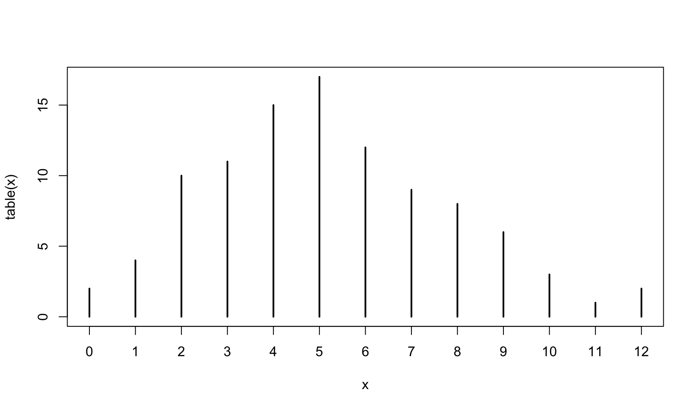

library(sloop)
library(purrr)
library(dplyr)
library(R6)
library(methods)
# from https://github.com/hadley/adv-r/blob/master/common.R
knitr::opts_chunk$set(
comment = "#>",
fig.align = "center"
)
knitr::knit_hooks$set(
small_mar = function(before, options, envir) {
if (before) {
par(mar = c(4.1, 4.1, 0.5, 0.5))
}
}
)Advanced R (Object-oriented programming)
exercises
advanced-r
Workbook for completing quizzes and exercises from the “Object-oriented programming” chapters of Advanced R, second edition, with comparisons to solutions from Advanced R Solutions.
Introduction
This workbook includes answers and solutions to the quizzes and exercises from Advanced R and Advanced R Solutions, organized by chapter. It includes excerpts from both books, copied here.
WARNING, SPOILERS! If you haven’t read Advanced R and intend to complete the quizzes and exercises, don’t read this notebook. It contains my (potentially wrong) answers to both.
12 Base types
To talk about objects and OOP in R we first need to clear up a fundamental confusion about two uses of the word “object”. So far in this book, we’ve used the word in the general sense captured by John Chambers’ pithy quote: “Everything that exists in R is an object”. However, while everything is an object, not everything is object-oriented. This confusion arises because the base objects come from S, and were developed before anyone thought that S might need an OOP system. The tools and nomenclature evolved organically over many years without a single guiding principle.
Most of the time, the distinction between objects and object-oriented objects is not important. But here we need to get into the nitty gritty details so we’ll use the terms base objects and OO objects to distinguish them.
13 S3
S3 is R’s first and simplest OO system. S3 is informal and ad hoc, but there is a certain elegance in its minimalism: you can’t take away any part of it and still have a useful OO system. For these reasons, you should use it, unless you have a compelling reason to do otherwise. S3 is the only OO system used in the base and stats packages, and it’s the most commonly used system in CRAN packages.
S3 is very flexible, which means it allows you to do things that are quite ill-advised. If you’re coming from a strict environment like Java this will seem pretty frightening, but it gives R programmers a tremendous amount of freedom. It may be very difficult to prevent people from doing something you don’t want them to do, but your users will never be held back because there is something you haven’t implemented yet. Since S3 has few built-in constraints, the key to its successful use is applying the constraints yourself. This chapter will therefore teach you the conventions you should (almost) always follow.
The goal of this chapter is to show you how the S3 system works, not how to use it effectively to create new classes and generics. I’d recommend coupling the theoretical knowledge from this chapter with the practical knowledge encoded in the vctrs package.
13.2.1 Exercises
- Describe the difference between
t.test()andt.data.frame(). When is each function called?
ftype(t.test)#> [1] "S3" "generic"ftype(t.data.frame)#> [1] "S3" "method"s3_dispatch(t.test(formula()))#> => t.test.formula
#> * t.test.defaults3_dispatch(t(data.frame()))#> => t.data.frame
#> -> t.defaultAnswer: As noted by sloop::ftype() and the docs, t.test() is a S3 generic, and t.data.frame() is an S3 method for t() (transpose). t.data.frame() is called as a method when calling t(x) when x is a data.frame. t.test() calls either t.test.default or t.test.formula.
AR Solutions: Because of S3’s generic.class() naming scheme, both functions may initially look similar, while they are in fact unrelated.
t.test()is a generic function that performs a t-test.t.data.frame()is a method that gets called by the generict()to transpose data frame input.
Due to R’s S3 dispatch rules, t.test() would also get called when t() is applied to an object of class test
- Make a list of commonly used base R functions that contain
.in their name but are not S3 methods.
ftype(as.character)#> [1] "primitive" "generic"ftype(as.data.frame)#> [1] "S3" "generic"ftype(data.frame)#> [1] "function"ftype(eval.parent)#> [1] "function"ftype(file.path)#> [1] "internal"ftype(file.copy)#> [1] "internal"ftype(is.null)#> [1] "primitive"ftype(is.data.frame)#> [1] "function"ftype(Sys.localeconv)#> [1] "internal"ftype(Sys.time)#> [1] "internal"Answer:
- All of the
as.functions data.frame- All of the
file.functions - All of the
is.functions - All of the
Sys.functions
AR Solutions: In recent years “snake_case”-style has become increasingly common when naming functions and variables in R. But many functions in base R will continue to be “point.separated”, which is why some inconsistency in your R code most likely cannot be avoided. (install.packages(), read.csv(), list.files(), download.file(), data.frame(), as.character(), Sys.Date(), all.equal(), do.call(), on.exit())
- What does the
as.data.frame.data.frame()method do? Why is it confusing? How could you avoid this confusion in your own code?
s3_dispatch(as.data.frame(data.frame()))#> => as.data.frame.data.frame
#> * as.data.frame.defaultAnswer: as.data.frame.data.frame() is the method used to coerce a data.frame to a data.frame. This is confusing because the class contains a period (as does the function call); avoiding periods improves readability: as_dataframe.dataframe makes the generic and method clear.
AR Solutions: The function as.data.frame.data.frame() implements the data.frame() method for the as.data.frame() generic, which coerces objects to data frames.
The name is confusing, because it does not clearly communicate the type of the function, which could be a regular function, a generic or a method. Even if we assume a method, the amount of .’s makes it difficult to separate the generic- and the class-part of the name. Is it the data.frame.data.frame() method for the as() generic? Is it the frame.data.frame() method for the as.data() generic?
We could avoid this confusion by applying a different naming convention (e.g. “snake_case”) for our class and function names.
- Describe the difference in behaviour in these two calls.
set.seed(1014)
some_days <- as.Date("2017-01-31") + sample(10, 5)
mean(some_days)#> [1] "2017-02-06"mean(unclass(some_days))#> [1] 17203.4s3_dispatch(mean(some_days))#> => mean.Date
#> * mean.defaults3_dispatch(mean(unclass(some_days)))#> mean.double
#> mean.numeric
#> => mean.defaultAnswer: the first call calculates the mean using mean.Date(), and so returns a date. using unclass() changes the date to its underlying value (double) which calculates the mean using mean.default().
AR Solutions: mean() is a generic function, which will select the appropriate method based on the class of the input. some_days has the class Date and mean.Date(some_days) will be used to calculate the mean date of some_days.
After unclass() has removed the class attribute from some_date, the default method is chosen. mean.default(unclass(some_days)) then calculates the mean of the underlying double.
- What class of object does the following code return? What base type is it built on? What attributes does it use?
x <- ecdf(rpois(100, 10))
x#> Empirical CDF
#> Call: ecdf(rpois(100, 10))
#> x[1:18] = 2, 3, 4, ..., 18, 19str(x)#> function (v)
#> - attr(*, "class")= chr [1:3] "ecdf" "stepfun" "function"
#> - attr(*, "call")= language ecdf(rpois(100, 10))Answer: the code returns an object of class ecdf, which is build on the stepfun object, and the function base type. It additionally includes the call attribute.
AR Solutions: It returns an object of the class ecdf (empirical cumulative distribution function) with the superclasses stepfun and function. The ecdf object is built on the base type closure (a function). The expression, which was used to create it (rpois(100, 10)), is stored in the call attribute.
typeof(x)#> [1] "closure"- What class of object does the following code return? What base type is it built on? What attributes does it use?
x <- table(rpois(100, 5))
x#>
#> 1 2 3 4 5 6 7 8 9 10
#> 7 5 18 14 15 15 14 4 5 3str(x)#> 'table' int [1:10(1d)] 7 5 18 14 15 15 14 4 5 3
#> - attr(*, "dimnames")=List of 1
#> ..$ : chr [1:10] "1" "2" "3" "4" ...str(unclass(x))#> int [1:10(1d)] 7 5 18 14 15 15 14 4 5 3
#> - attr(*, "dimnames")=List of 1
#> ..$ : chr [1:10] "1" "2" "3" "4" ...Answer: per the docs, the code returns an object of class table, which is built on array, which uses the dimnames attribute in combination with a vector.
AR Solutions: This code returns a table object, which is built upon the integer type. The attribute dimnames is used to name the elements of the integer vector.
13.3.4 Exercises
- Write a constructor for
data.frameobjects. What base type is a data frame built on? What attributes does it use? What are the restrictions placed on the individual elements? What about the names?
dput(data.frame())#> structure(list(), names = character(0), row.names = integer(0), class = "data.frame")dput(data.frame(a = 1:2, b = 3:4))#> structure(list(a = 1:2, b = 3:4), class = "data.frame", row.names = c(NA,
#> -2L))unclass(data.frame(a = 1:2, b = 3:4))#> $a
#> [1] 1 2
#>
#> $b
#> [1] 3 4
#>
#> attr(,"row.names")
#> [1] 1 2Answer: code below. The data frame is built on the list base type, and includes the names, row.names, and class attributes. This implementation requires values to be a list, names to be a character, and row.names to be an integer.
new_data.frame <- function(values = list(),
names = character(length(values)),
row.names = integer(length(values))) {
stopifnot(
is.list(values),
is.character(names),
is.integer(row.names)
)
structure(values, names = names, row.names = row.names, class = "data.frame")
}
new_data.frame()#> data frame with 0 columns and 0 rowsnew_data.frame(list(1:3, 4:6, 7:9))#>
#> 0 1 4 7
#> 0 2 5 8
#> 0 3 6 9new_data.frame(list(1:3, 4:6, 7:9), names = c("a", "b", "c"), row.names = 1:3)#> a b c
#> 1 1 4 7
#> 2 2 5 8
#> 3 3 6 9AR Solutions: Data frames are built on named lists of vectors, which all have the same length. Besides the class and the column names (names), the row.names are their only further attribute. This must be a character vector with the same length as the other vectors.
We need to provide the number of rows as an input to make it possible to create data frames with 0 columns but multiple rows.
This leads to the following constructor:
new_data.frame <- function(x, n, row.names = NULL) {
# Check if the underlying object is a list
stopifnot(is.list(x))
# Check all inputs are the same length
# (This check also allows that x has length 0)
stopifnot(all(lengths(x) == n))
if (is.null(row.names)) {
# Use special row names helper from base R
row.names <- .set_row_names(n)
} else {
# Otherwise check that they're a character vector with the
# correct length
stopifnot(is.character(row.names), length(row.names) == n)
}
structure(
x,
class = "data.frame",
row.names = row.names
)
}
# Test
x <- list(a = 1, b = 2)
new_data.frame(x, n = 1)#> a b
#> 1 1 2new_data.frame(x, n = 1, row.names = "l1")#> a b
#> l1 1 2# Create a data frame with 0 columns and 2 rows
new_data.frame(list(), n = 2)#> data frame with 0 columns and 2 rowsNote: AR Solutions approach also validates that all inputs are same length, and supports creation of dataframes with 0 columns but multiple rows.
- Enhance my
factor()helper to have better behaviour when one or morevaluesis not found inlevels. What doesbase::factor()do in this situation?
new_factor <- function(x = integer(), levels = character()) {
stopifnot(
is.integer(x),
is.character(levels)
)
structure(
x,
levels = levels,
class = "factor"
)
}Answer: the fix is to update validate_factor() to allow NA values, since the helper already fills in NA when values is not found in levels. This matches the behavior of base::factor().
validate_factor <- function(x) {
values <- unclass(x)
levels <- attr(x, "levels")
if (!all(is.na(values) | values > 0)) {
stop(
"All non-missing `x` values must be greater than zero",
call. = FALSE
)
}
if (length(levels) < max(values, na.rm = TRUE)) {
stop(
"There must be at least as many `levels` as possible values in `x`",
call. = FALSE
)
}
x
}
my_factor <- function(x = character(), levels = unique(x)) {
ind <- match(x, levels)
validate_factor(new_factor(ind, levels))
}
factor(c("a", "a", "b"), levels = "a")#> [1] a a <NA>
#> Levels: amy_factor(c("a", "a", "b"), levels = "a")#> [1] a a <NA>
#> Levels: aAR Solutions: base::factor() converts these values (silently) into NAs.
The factor() helper including the constructor (new_factor()) and its validator (validate_factor()) were given in Advanced R. However, as the goal of this question is to throw an early error within the helper, we only repeat the code for the helper:
To improve the factor() helper we choose to return an informative error message instead.
factor2 <- function(x, levels = unique(x)) {
new_levels <- match(x, levels)
# Error if levels don't include all values
missing <- unique(setdiff(x, levels))
if (length(missing) > 0) {
stop(
"The following values do not occur in the levels of x: ",
paste0("'", missing, "'", collapse = ", "), ".",
call. = FALSE
)
}
validate_factor(new_factor(new_levels, levels))
}
# Test
try(factor2(c("a", "b", "c"), levels = c("a", "b")))#> Error : The following values do not occur in the levels of x: 'c'.- Carefully read the source code of
factor(). What does it do that my constructor does not?
factor(c("a", "a", "b", "c"), labels = c("alpha", "beta", "beta"))#> [1] alpha alpha beta beta
#> Levels: alpha betaclass(factor(1:10, ordered = TRUE))#> [1] "ordered" "factor"Answer: the base implementation:
- sets the value to
character(0)if the value is null - retains value names
- allows an upper bound on the number of levels,
nmax - coerces the value to character
- provides a method for excluding values from levels,
exclude - provides
labelsfor remapping factors - adds an “ordered” class if the value is ordered (
ordered = TRUE)
Note: labels are an interesting and unexpected feature of factor()
factor#> function (x = character(), levels, labels = levels, exclude = NA,
#> ordered = is.ordered(x), nmax = NA)
#> {
#> if (is.null(x))
#> x <- character()
#> nx <- names(x)
#> if (missing(levels)) {
#> y <- unique(x, nmax = nmax)
#> ind <- order(y)
#> levels <- unique(as.character(y)[ind])
#> }
#> force(ordered)
#> if (!is.character(x))
#> x <- as.character(x)
#> levels <- levels[is.na(match(levels, exclude))]
#> f <- match(x, levels)
#> if (!is.null(nx))
#> names(f) <- nx
#> if (missing(labels)) {
#> levels(f) <- as.character(levels)
#> }
#> else {
#> nlab <- length(labels)
#> if (nlab == length(levels)) {
#> nlevs <- unique(xlevs <- as.character(labels))
#> at <- attributes(f)
#> at$levels <- nlevs
#> f <- match(xlevs, nlevs)[f]
#> attributes(f) <- at
#> }
#> else if (nlab == 1L)
#> levels(f) <- paste0(labels, seq_along(levels))
#> else stop(gettextf("invalid 'labels'; length %d should be 1 or %d",
#> nlab, length(levels)), domain = NA)
#> }
#> class(f) <- c(if (ordered) "ordered", "factor")
#> f
#> }
#> <bytecode: 0x158901678>
#> <environment: namespace:base>AR Solutions: The original implementation (base::factor()) allows more flexible input for x. It coerces x to character or replaces it with character(0) (in case of NULL). It also ensures that the levels are unique. This is achieved by setting them via base::levels<-, which fails when duplicate values are supplied.
Note: I missed the fact that base::levels<- fails when duplicate values are supplied.
- Factors have an optional “contrasts” attribute. Read the help for
C(), and briefly describe the purpose of the attribute. What type should it have? Rewrite thenew_factor()constructor to include this attribute.
Answer: per the “contrast {stats}” documentation, contrast matrices are used in fitting analysis of variance and regression models, so the attribute should be a matrix.
new_factor <- function(x = integer(), levels = character(), contr = matrix()) {
stopifnot(is.integer(x), is.character(levels), is.matrix(contr))
structure(
x,
levels = levels,
class = "factor",
contrasts = contr
)
}AR Solutions: When factor variables (representing nominal or ordinal information) are used in statistical models, they are typically encoded as dummy variables and by default each level is compared with the first factor level. However, many different encodings (“contrasts”) are possible, see Contrast.
Within R’s formula interface you can wrap a factor in stats::C() and specify the contrast of your choice. Alternatively, you can set the contrasts attribute of your factor variable, which accepts matrix input. (See ?contr.helmert or similar for details.)
Our updated new_factor() constructor gets a contrasts argument, which accepts a numeric matrix or NULL (default).
# Updated new_factor() constructor
new_factor <- function(x = integer(),
levels = character(),
contrasts = NULL) {
stopifnot(is.integer(x))
stopifnot(is.character(levels))
if (!is.null(constrasts)) {
stopifnot(is.matrix(contrasts) && is.numeric(contrasts)) # nolint: conjunct_test_linter.
}
structure(
x,
levels = levels,
class = "factor",
contrasts = contrasts
)
}- Read the documentation for
utils::as.roman(). How would you write a constructor for this class? Does it need a validator? What might a helper do?
dput(as.roman(3899))#> structure(3899L, class = "roman")new_roman <- function(x = integer()) {
stopifnot(is.integer(x))
structure(
x,
class = "roman"
)
}
new_roman(2022L)#> [1] MMXXIIAnswer: the structure of the class “roman” is simple, an integer with a defined class. A simple constructor would take an integer and return an object of class “roman” as above. A validator is probably not needed, but could validate that the integer is within the supported range of integers (1-3899). A helper might coerce the number to be an integer using as.integer().
AR Solutions: This function transforms numeric input into Roman numbers. It is built on the integer type, which results in the following constructor.
new_roman <- function(x = integer()) {
stopifnot(is.integer(x))
structure(x, class = "roman")
}The documentation tells us, that only values between 1 and 3899 are uniquely represented, which we then include in our validation function.
validate_roman <- function(x) {
values <- unclass(x)
if (any(values < 1 | values > 3899)) {
stop(
"Roman numbers must fall between 1 and 3899.",
call. = FALSE
)
}
x
}For convenience, we allow the user to also pass real values to a helper function.
roman <- function(x = integer()) {
x <- as.integer(x)
validate_roman(new_roman(x))
}
# Test
roman(c(1, 753, 2019))#> [1] I DCCLIII MMXIXtry(roman(0))#> Error : Roman numbers must fall between 1 and 3899.13.4.4 Exercises
- Read the source code for
t()andt.test()and confirm thatt.test()is an S3 generic and not an S3 method. What happens if you create an object with classtestand callt()with it? Why?
x <- structure(1:10, class = "test")
t(x)#> [,1] [,2] [,3] [,4] [,5] [,6] [,7] [,8] [,9] [,10]
#> [1,] 1 2 3 4 5 6 7 8 9 10
#> attr(,"class")
#> [1] "test"Answer: both t() and t.test() simply call UseMethod(), and are S3 generics.
t#> function (x)
#> UseMethod("t")
#> <bytecode: 0x10fd37468>
#> <environment: namespace:base>t.test#> function (x, ...)
#> UseMethod("t.test")
#> <bytecode: 0x1588fa8a0>
#> <environment: namespace:stats>Creating an object with class test and calling t() uses the default method since t.test() is not a registered method for t(), as this code shows:
methods("t")#> [1] t.data.frame t.default t.ts* t.vctrs_sclr* t.vctrs_vctr*
#> see '?methods' for accessing help and source codes3_dispatch(t(x))#> t.test
#> => t.defaultAR Solutions: We can see that t.test() is a generic because it calls UseMethod().
# or simply call
ftype(t.test)#> [1] "S3" "generic"Interestingly, R also provides helpers, which list functions that look like methods, but in fact are not:
tools::nonS3methods("stats")#> [1] "anova.lmlist" "expand.model.frame" "fitted.values"
#> [4] "influence.measures" "lag.plot" "t.test"
#> [7] "plot.spec.phase" "plot.spec.coherency"When we create an object with class test, t() dispatches to the t.default() method. This happens, because UseMethod() simply searches for functions named paste0("generic", ".", c(class(x), "default")).
However, in older versions of R (pre R 4.0.0; when Advanced R was written) this behaviour was slightly different. Instead of dispatching to the t.default() method, the t.test() generic was erroneously treated as a method of t() which then dispatched to t.test.default() or (when defined) to t.test.test().
- What generics does the
tableclass have methods for?
Answer: s3_methods_class() answers this question:
s3_methods_class("table")#> # A tibble: 11 × 4
#> generic class visible source
#> <chr> <chr> <lgl> <chr>
#> 1 [ table TRUE base
#> 2 aperm table TRUE base
#> 3 as_tibble table FALSE registered S3method
#> 4 as.data.frame table TRUE base
#> 5 Axis table FALSE registered S3method
#> 6 lines table FALSE registered S3method
#> 7 plot table FALSE registered S3method
#> 8 points table FALSE registered S3method
#> 9 print table TRUE base
#> 10 summary table TRUE base
#> 11 tail table FALSE registered S3methodAR Solutions: This is a simple application of sloop::s3_methods_class().
Interestingly, the table class has a number of methods designed to help plotting with base graphics.
x <- rpois(100, 5)
plot(table(x))
- What generics does the
ecdfclass have methods for?
Answer:
s3_methods_class("ecdf")#> # A tibble: 4 × 4
#> generic class visible source
#> <chr> <chr> <lgl> <chr>
#> 1 plot ecdf TRUE stats
#> 2 print ecdf FALSE registered S3method
#> 3 quantile ecdf FALSE registered S3method
#> 4 summary ecdf FALSE registered S3methodAR Solutions: We use the same approach as above.
The methods are primarily designed for display (plot(), print(), summary()), but you can also extract quantiles with quantile().
- Which base generic has the greatest number of defined methods?
Answer: using code from 6.2.5, identify generics and count defined methods:
# from 6.2.5 exercises, this code makes a list of all functions in the base package
funs <- Filter(is.function, mget(ls("package:base", all.names = TRUE), inherits = TRUE))
get_method_count <- function(fname) {
data.frame(
name = fname,
# this code should work but doesn't:
# method_count = nrow(s3_methods_generic(fname))
method_count = length(methods(fname))
)
}
map_dfr(names(funs), get_method_count) |>
arrange(desc(method_count))#> name method_count
#> 1 print 277
#> 2 format 126
#> 3 [ 49
#> 4 summary 39
#> 5 as.character 32
#> 6 as.data.frame 32
#> 7 plot 31
#> 8 [[ 22
#> 9 [<- 18
#> 10 $<- 18
#> 11 $ 17
#> 12 file 17
#> 13 [[<- 15
#> 14 as.list 15
#> 15 c 15
#> 16 all.equal 12
#> 17 xtfrm 11
#> 18 rep 10
#> 19 unique 10
#> 20 duplicated 9
#> 21 as.Date 8
#> 22 as.matrix 8
#> 23 as.POSIXlt 7
#> 24 length<- 7
#> 25 mean 7
#> 26 names<- 7
#> 27 row 7
#> 28 anyDuplicated 6
#> 29 as.POSIXct 6
#> 30 diff 6
#> 31 length 6
#> 32 write 6
#> 33 anyNA 5
#> 34 conditionMessage 5
#> 35 is.na 5
#> 36 is.na<- 5
#> 37 labels 5
#> 38 names 5
#> 39 t 5
#> 40 - 4
#> 41 + 4
#> 42 as.double 4
#> 43 as.vector 4
#> 44 close 4
#> 45 cut 4
#> 46 open 4
#> 47 range 4
#> 48 split 4
#> 49 subset 4
#> 50 ! 3
#> 51 & 3
#> 52 | 3
#> 53 as.logical 3
#> 54 cbind 3
#> 55 dimnames<- 3
#> 56 is.numeric 3
#> 57 kappa 3
#> 58 levels 3
#> 59 levels<- 3
#> 60 ls 3
#> 61 match 3
#> 62 merge 3
#> 63 mtfrm 3
#> 64 pretty 3
#> 65 row.names<- 3
#> 66 seq 3
#> 67 sort 3
#> 68 transform 3
#> 69 * 2
#> 70 / 2
#> 71 aperm 2
#> 72 as.integer 2
#> 73 as.table 2
#> 74 body<- 2
#> 75 by 2
#> 76 dim<- 2
#> 77 dimnames 2
#> 78 dir 2
#> 79 drop 2
#> 80 droplevels 2
#> 81 getDLLRegisteredRoutines 2
#> 82 intersect 2
#> 83 is.finite 2
#> 84 is.infinite 2
#> 85 is.nan 2
#> 86 julian 2
#> 87 library 2
#> 88 list 2
#> 89 max 2
#> 90 min 2
#> 91 months 2
#> 92 qr 2
#> 93 quarters 2
#> 94 rbind 2
#> 95 rev 2
#> 96 round 2
#> 97 row.names 2
#> 98 rowsum 2
#> 99 setdiff 2
#> 100 setequal 2
#> 101 solve 2
#> 102 sort_by 2
#> 103 split<- 2
#> 104 system 2
#> 105 trunc 2
#> 106 union 2
#> 107 unlist 2
#> 108 weekdays 2
#> 109 which 2
#> 110 within 2
#> 111 != 1
#> 112 %/% 1
#> 113 %% 1
#> 114 ^ 1
#> 115 < 1
#> 116 <= 1
#> 117 == 1
#> 118 > 1
#> 119 >= 1
#> 120 as.array 1
#> 121 as.environment 1
#> 122 as.expression 1
#> 123 as.function 1
#> 124 as.null 1
#> 125 as.single 1
#> 126 attr 1
#> 127 chol 1
#> 128 chooseOpsMethod 1
#> 129 conditionCall 1
#> 130 determinant 1
#> 131 dim 1
#> 132 dump 1
#> 133 eval 1
#> 134 factor 1
#> 135 flush 1
#> 136 gc 1
#> 137 interaction 1
#> 138 isSymmetric 1
#> 139 kronecker 1
#> 140 lengths 1
#> 141 library.dynam 1
#> 142 nameOfClass 1
#> 143 order 1
#> 144 pmax 1
#> 145 pmin 1
#> 146 remove 1
#> 147 sample 1
#> 148 save 1
#> 149 scale 1
#> 150 seek 1
#> 151 sequence 1
#> 152 sink 1
#> 153 sum 1
#> 154 toString 1
#> 155 truncate 1
#> 156 units 1
#> 157 units<- 1
#> 158 url 1
#> 159 with 1
#> 160 -.Date 0
#> 161 -.POSIXt 0
#> 162 : 0
#> 163 :: 0
#> 164 ::: 0
#> 165 !.hexmode 0
#> 166 !.octmode 0
#> 167 .__H__.cbind 0
#> 168 .__H__.rbind 0
#> 169 ...elt 0
#> 170 ...length 0
#> 171 ...names 0
#> 172 ..getNamespace 0
#> 173 .amatch_bounds 0
#> 174 .amatch_costs 0
#> 175 .bincode 0
#> 176 .C 0
#> 177 .cache_class 0
#> 178 .Call 0
#> 179 .Call.graphics 0
#> 180 .check_tzones 0
#> 181 .class2 0
#> 182 .col 0
#> 183 .colMeans 0
#> 184 .colSums 0
#> 185 .Date 0
#> 186 .decode_numeric_version 0
#> 187 .Defunct 0
#> 188 .deparseOpts 0
#> 189 .Deprecated 0
#> 190 .detach 0
#> 191 .difftime 0
#> 192 .doSortWrap 0
#> 193 .doTrace 0
#> 194 .doWrap 0
#> 195 .dynLibs 0
#> 196 .encode_numeric_version 0
#> 197 .expand_R_libs_env_var 0
#> 198 .External 0
#> 199 .External.graphics 0
#> 200 .External2 0
#> 201 .First.sys 0
#> 202 .format.zeros 0
#> 203 .formula2varlist 0
#> 204 .Fortran 0
#> 205 .getNamespace 0
#> 206 .getNamespaceInfo 0
#> 207 .getRequiredPackages 0
#> 208 .getRequiredPackages2 0
#> 209 .gt 0
#> 210 .gtn 0
#> 211 .handleSimpleError 0
#> 212 .Internal 0
#> 213 .isMethodsDispatchOn 0
#> 214 .isOpen 0
#> 215 .kappa_tri 0
#> 216 .kronecker 0
#> 217 .libPaths 0
#> 218 .make_numeric_version 0
#> 219 .makeMessage 0
#> 220 .mapply 0
#> 221 .maskedMsg 0
#> 222 .mergeExportMethods 0
#> 223 .mergeImportMethods 0
#> 224 .NotYetImplemented 0
#> 225 .NotYetUsed 0
#> 226 .OptRequireMethods 0
#> 227 .packages 0
#> 228 .packageStartupMessage 0
#> 229 .POSIXct 0
#> 230 .POSIXlt 0
#> 231 .pretty 0
#> 232 .Primitive 0
#> 233 .primTrace 0
#> 234 .primUntrace 0
#> 235 .rangeNum 0
#> 236 .rmpkg 0
#> 237 .row 0
#> 238 .row_names_info 0
#> 239 .rowMeans 0
#> 240 .rowNamesDF<- 0
#> 241 .rowSums 0
#> 242 .S3method 0
#> 243 .Script 0
#> 244 .set_row_names 0
#> 245 .signalSimpleWarning 0
#> 246 .standard_regexps 0
#> 247 .subset 0
#> 248 .subset2 0
#> 249 .TAOCP1997init 0
#> 250 .traceback 0
#> 251 .tryResumeInterrupt 0
#> 252 .valid.factor 0
#> 253 ( 0
#> 254 [.AsIs 0
#> 255 [.data.frame 0
#> 256 [.Date 0
#> 257 [.difftime 0
#> 258 [.Dlist 0
#> 259 [.DLLInfoList 0
#> 260 [.factor 0
#> 261 [.hexmode 0
#> 262 [.listof 0
#> 263 [.noquote 0
#> 264 [.numeric_version 0
#> 265 [.octmode 0
#> 266 [.POSIXct 0
#> 267 [.POSIXlt 0
#> 268 [.simple.list 0
#> 269 [.table 0
#> 270 [.warnings 0
#> 271 [[.data.frame 0
#> 272 [[.Date 0
#> 273 [[.factor 0
#> 274 [[.numeric_version 0
#> 275 [[.POSIXct 0
#> 276 [[.POSIXlt 0
#> 277 [[<-.data.frame 0
#> 278 [[<-.factor 0
#> 279 [[<-.numeric_version 0
#> 280 [[<-.POSIXlt 0
#> 281 [<-.data.frame 0
#> 282 [<-.Date 0
#> 283 [<-.difftime 0
#> 284 [<-.factor 0
#> 285 [<-.numeric_version 0
#> 286 [<-.POSIXct 0
#> 287 [<-.POSIXlt 0
#> 288 { 0
#> 289 @ 0
#> 290 @<- 0
#> 291 *.difftime 0
#> 292 /.difftime 0
#> 293 &.hexmode 0
#> 294 &.octmode 0
#> 295 && 0
#> 296 %*% 0
#> 297 %||% 0
#> 298 %in% 0
#> 299 %o% 0
#> 300 %x% 0
#> 301 +.Date 0
#> 302 +.POSIXt 0
#> 303 <- 0
#> 304 <<- 0
#> 305 = 0
#> 306 |.hexmode 0
#> 307 |.octmode 0
#> 308 || 0
#> 309 ~ 0
#> 310 $.DLLInfo 0
#> 311 $.package_version 0
#> 312 $<-.data.frame 0
#> 313 $<-.POSIXlt 0
#> 314 abbreviate 0
#> 315 abs 0
#> 316 acos 0
#> 317 acosh 0
#> 318 activeBindingFunction 0
#> 319 addNA 0
#> 320 addTaskCallback 0
#> 321 agrep 0
#> 322 agrepl 0
#> 323 alist 0
#> 324 all 0
#> 325 all.equal.character 0
#> 326 all.equal.default 0
#> 327 all.equal.environment 0
#> 328 all.equal.envRefClass 0
#> 329 all.equal.factor 0
#> 330 all.equal.formula 0
#> 331 all.equal.function 0
#> 332 all.equal.language 0
#> 333 all.equal.list 0
#> 334 all.equal.numeric 0
#> 335 all.equal.POSIXt 0
#> 336 all.equal.raw 0
#> 337 all.names 0
#> 338 all.vars 0
#> 339 allowInterrupts 0
#> 340 any 0
#> 341 anyDuplicated.array 0
#> 342 anyDuplicated.data.frame 0
#> 343 anyDuplicated.default 0
#> 344 anyDuplicated.matrix 0
#> 345 anyNA.data.frame 0
#> 346 anyNA.numeric_version 0
#> 347 anyNA.POSIXlt 0
#> 348 aperm.default 0
#> 349 aperm.table 0
#> 350 append 0
#> 351 apply 0
#> 352 Arg 0
#> 353 args 0
#> 354 array 0
#> 355 array2DF 0
#> 356 arrayInd 0
#> 357 as.array.default 0
#> 358 as.call 0
#> 359 as.character.condition 0
#> 360 as.character.Date 0
#> 361 as.character.default 0
#> 362 as.character.error 0
#> 363 as.character.factor 0
#> 364 as.character.hexmode 0
#> 365 as.character.numeric_version 0
#> 366 as.character.octmode 0
#> 367 as.character.POSIXt 0
#> 368 as.character.srcref 0
#> 369 as.complex 0
#> 370 as.data.frame.array 0
#> 371 as.data.frame.AsIs 0
#> 372 as.data.frame.character 0
#> 373 as.data.frame.complex 0
#> 374 as.data.frame.data.frame 0
#> 375 as.data.frame.Date 0
#> 376 as.data.frame.default 0
#> 377 as.data.frame.difftime 0
#> 378 as.data.frame.factor 0
#> 379 as.data.frame.integer 0
#> 380 as.data.frame.list 0
#> 381 as.data.frame.logical 0
#> 382 as.data.frame.matrix 0
#> 383 as.data.frame.model.matrix 0
#> 384 as.data.frame.noquote 0
#> 385 as.data.frame.numeric 0
#> 386 as.data.frame.numeric_version 0
#> 387 as.data.frame.ordered 0
#> 388 as.data.frame.POSIXct 0
#> 389 as.data.frame.POSIXlt 0
#> 390 as.data.frame.raw 0
#> 391 as.data.frame.table 0
#> 392 as.data.frame.ts 0
#> 393 as.data.frame.vector 0
#> 394 as.Date.character 0
#> 395 as.Date.default 0
#> 396 as.Date.factor 0
#> 397 as.Date.numeric 0
#> 398 as.Date.POSIXct 0
#> 399 as.Date.POSIXlt 0
#> 400 as.difftime 0
#> 401 as.double.difftime 0
#> 402 as.double.POSIXlt 0
#> 403 as.expression.default 0
#> 404 as.factor 0
#> 405 as.function.default 0
#> 406 as.hexmode 0
#> 407 as.list.data.frame 0
#> 408 as.list.Date 0
#> 409 as.list.default 0
#> 410 as.list.difftime 0
#> 411 as.list.environment 0
#> 412 as.list.factor 0
#> 413 as.list.function 0
#> 414 as.list.numeric_version 0
#> 415 as.list.POSIXct 0
#> 416 as.list.POSIXlt 0
#> 417 as.logical.factor 0
#> 418 as.matrix.data.frame 0
#> 419 as.matrix.default 0
#> 420 as.matrix.noquote 0
#> 421 as.matrix.POSIXlt 0
#> 422 as.name 0
#> 423 as.null.default 0
#> 424 as.numeric 0
#> 425 as.numeric_version 0
#> 426 as.octmode 0
#> 427 as.ordered 0
#> 428 as.package_version 0
#> 429 as.pairlist 0
#> 430 as.POSIXct.Date 0
#> 431 as.POSIXct.default 0
#> 432 as.POSIXct.numeric 0
#> 433 as.POSIXct.POSIXlt 0
#> 434 as.POSIXlt.character 0
#> 435 as.POSIXlt.Date 0
#> 436 as.POSIXlt.default 0
#> 437 as.POSIXlt.factor 0
#> 438 as.POSIXlt.numeric 0
#> 439 as.POSIXlt.POSIXct 0
#> 440 as.qr 0
#> 441 as.raw 0
#> 442 as.single.default 0
#> 443 as.symbol 0
#> 444 as.table.default 0
#> 445 as.vector.data.frame 0
#> 446 as.vector.factor 0
#> 447 as.vector.POSIXlt 0
#> 448 asin 0
#> 449 asinh 0
#> 450 asNamespace 0
#> 451 asplit 0
#> 452 asS3 0
#> 453 asS4 0
#> 454 assign 0
#> 455 atan 0
#> 456 atan2 0
#> 457 atanh 0
#> 458 attach 0
#> 459 attachNamespace 0
#> 460 attr.all.equal 0
#> 461 attr<- 0
#> 462 attributes 0
#> 463 attributes<- 0
#> 464 autoload 0
#> 465 autoloader 0
#> 466 backsolve 0
#> 467 balancePOSIXlt 0
#> 468 baseenv 0
#> 469 basename 0
#> 470 besselI 0
#> 471 besselJ 0
#> 472 besselK 0
#> 473 besselY 0
#> 474 beta 0
#> 475 bindingIsActive 0
#> 476 bindingIsLocked 0
#> 477 bindtextdomain 0
#> 478 bitwAnd 0
#> 479 bitwNot 0
#> 480 bitwOr 0
#> 481 bitwShiftL 0
#> 482 bitwShiftR 0
#> 483 bitwXor 0
#> 484 body 0
#> 485 bquote 0
#> 486 break 0
#> 487 browser 0
#> 488 browserCondition 0
#> 489 browserSetDebug 0
#> 490 browserText 0
#> 491 builtins 0
#> 492 by.data.frame 0
#> 493 by.default 0
#> 494 bzfile 0
#> 495 c.Date 0
#> 496 c.difftime 0
#> 497 c.factor 0
#> 498 c.noquote 0
#> 499 c.numeric_version 0
#> 500 c.POSIXct 0
#> 501 c.POSIXlt 0
#> 502 c.warnings 0
#> 503 call 0
#> 504 callCC 0
#> 505 capabilities 0
#> 506 casefold 0
#> 507 cat 0
#> 508 cbind.data.frame 0
#> 509 ceiling 0
#> 510 char.expand 0
#> 511 character 0
#> 512 charmatch 0
#> 513 charToRaw 0
#> 514 chartr 0
#> 515 chkDots 0
#> 516 chol.default 0
#> 517 chol2inv 0
#> 518 choose 0
#> 519 chooseOpsMethod.default 0
#> 520 class 0
#> 521 class<- 0
#> 522 clearPushBack 0
#> 523 close.connection 0
#> 524 close.srcfile 0
#> 525 close.srcfilealias 0
#> 526 closeAllConnections 0
#> 527 col 0
#> 528 colMeans 0
#> 529 colnames 0
#> 530 colnames<- 0
#> 531 colSums 0
#> 532 commandArgs 0
#> 533 comment 0
#> 534 comment<- 0
#> 535 complex 0
#> 536 computeRestarts 0
#> 537 conditionCall.condition 0
#> 538 conditionMessage.condition 0
#> 539 conflictRules 0
#> 540 conflicts 0
#> 541 Conj 0
#> 542 contributors 0
#> 543 cos 0
#> 544 cosh 0
#> 545 cospi 0
#> 546 crossprod 0
#> 547 Cstack_info 0
#> 548 cummax 0
#> 549 cummin 0
#> 550 cumprod 0
#> 551 cumsum 0
#> 552 curlGetHeaders 0
#> 553 cut.Date 0
#> 554 cut.default 0
#> 555 cut.POSIXt 0
#> 556 data.class 0
#> 557 data.frame 0
#> 558 data.matrix 0
#> 559 date 0
#> 560 debug 0
#> 561 debuggingState 0
#> 562 debugonce 0
#> 563 declare 0
#> 564 default.stringsAsFactors 0
#> 565 delayedAssign 0
#> 566 deparse 0
#> 567 deparse1 0
#> 568 det 0
#> 569 detach 0
#> 570 determinant.matrix 0
#> 571 dget 0
#> 572 diag 0
#> 573 diag<- 0
#> 574 diff.Date 0
#> 575 diff.default 0
#> 576 diff.difftime 0
#> 577 diff.POSIXt 0
#> 578 difftime 0
#> 579 digamma 0
#> 580 dim.data.frame 0
#> 581 dimnames.data.frame 0
#> 582 dimnames<-.data.frame 0
#> 583 dir.create 0
#> 584 dir.exists 0
#> 585 dirname 0
#> 586 do.call 0
#> 587 dontCheck 0
#> 588 double 0
#> 589 dput 0
#> 590 dQuote 0
#> 591 droplevels.data.frame 0
#> 592 droplevels.factor 0
#> 593 duplicated.array 0
#> 594 duplicated.data.frame 0
#> 595 duplicated.default 0
#> 596 duplicated.matrix 0
#> 597 duplicated.numeric_version 0
#> 598 duplicated.POSIXlt 0
#> 599 duplicated.warnings 0
#> 600 dyn.load 0
#> 601 dyn.unload 0
#> 602 dynGet 0
#> 603 eapply 0
#> 604 eigen 0
#> 605 emptyenv 0
#> 606 enc2native 0
#> 607 enc2utf8 0
#> 608 encodeString 0
#> 609 Encoding 0
#> 610 Encoding<- 0
#> 611 endsWith 0
#> 612 enquote 0
#> 613 env.profile 0
#> 614 environment 0
#> 615 environment<- 0
#> 616 environmentIsLocked 0
#> 617 environmentName 0
#> 618 errorCondition 0
#> 619 eval.parent 0
#> 620 evalq 0
#> 621 Exec 0
#> 622 exists 0
#> 623 exp 0
#> 624 expand.grid 0
#> 625 expm1 0
#> 626 expression 0
#> 627 extSoftVersion 0
#> 628 factorial 0
#> 629 fifo 0
#> 630 file.access 0
#> 631 file.append 0
#> 632 file.choose 0
#> 633 file.copy 0
#> 634 file.create 0
#> 635 file.exists 0
#> 636 file.info 0
#> 637 file.link 0
#> 638 file.mode 0
#> 639 file.mtime 0
#> 640 file.path 0
#> 641 file.remove 0
#> 642 file.rename 0
#> 643 file.show 0
#> 644 file.size 0
#> 645 file.symlink 0
#> 646 Filter 0
#> 647 Find 0
#> 648 find.package 0
#> 649 findInterval 0
#> 650 findPackageEnv 0
#> 651 findRestart 0
#> 652 floor 0
#> 653 flush.connection 0
#> 654 for 0
#> 655 force 0
#> 656 forceAndCall 0
#> 657 formals 0
#> 658 formals<- 0
#> 659 format.AsIs 0
#> 660 format.data.frame 0
#> 661 format.Date 0
#> 662 format.default 0
#> 663 format.difftime 0
#> 664 format.factor 0
#> 665 format.hexmode 0
#> 666 format.info 0
#> 667 format.libraryIQR 0
#> 668 format.numeric_version 0
#> 669 format.octmode 0
#> 670 format.packageInfo 0
#> 671 format.POSIXct 0
#> 672 format.POSIXlt 0
#> 673 format.pval 0
#> 674 format.summaryDefault 0
#> 675 formatC 0
#> 676 formatDL 0
#> 677 forwardsolve 0
#> 678 function 0
#> 679 gamma 0
#> 680 gc.time 0
#> 681 gcinfo 0
#> 682 gctorture 0
#> 683 gctorture2 0
#> 684 get 0
#> 685 get0 0
#> 686 getAllConnections 0
#> 687 getCallingDLL 0
#> 688 getCallingDLLe 0
#> 689 getConnection 0
#> 690 getDLLRegisteredRoutines.character 0
#> 691 getDLLRegisteredRoutines.DLLInfo 0
#> 692 getElement 0
#> 693 geterrmessage 0
#> 694 getExportedValue 0
#> 695 getHook 0
#> 696 getLoadedDLLs 0
#> 697 getNamespace 0
#> 698 getNamespaceExports 0
#> 699 getNamespaceImports 0
#> 700 getNamespaceInfo 0
#> 701 getNamespaceName 0
#> 702 getNamespaceUsers 0
#> 703 getNamespaceVersion 0
#> 704 getNativeSymbolInfo 0
#> 705 getOption 0
#> 706 getRversion 0
#> 707 getSrcLines 0
#> 708 getTaskCallbackNames 0
#> 709 gettext 0
#> 710 gettextf 0
#> 711 getwd 0
#> 712 gl 0
#> 713 globalCallingHandlers 0
#> 714 globalenv 0
#> 715 gregexec 0
#> 716 gregexpr 0
#> 717 grep 0
#> 718 grepl 0
#> 719 grepRaw 0
#> 720 grouping 0
#> 721 gsub 0
#> 722 gzcon 0
#> 723 gzfile 0
#> 724 I 0
#> 725 iconv 0
#> 726 iconvlist 0
#> 727 icuGetCollate 0
#> 728 icuSetCollate 0
#> 729 identical 0
#> 730 identity 0
#> 731 if 0
#> 732 ifelse 0
#> 733 Im 0
#> 734 importIntoEnv 0
#> 735 infoRDS 0
#> 736 inherits 0
#> 737 integer 0
#> 738 interactive 0
#> 739 intToBits 0
#> 740 intToUtf8 0
#> 741 inverse.rle 0
#> 742 invisible 0
#> 743 invokeRestart 0
#> 744 invokeRestartInteractively 0
#> 745 is.array 0
#> 746 is.atomic 0
#> 747 is.call 0
#> 748 is.character 0
#> 749 is.complex 0
#> 750 is.data.frame 0
#> 751 is.double 0
#> 752 is.element 0
#> 753 is.environment 0
#> 754 is.expression 0
#> 755 is.factor 0
#> 756 is.finite.POSIXlt 0
#> 757 is.function 0
#> 758 is.infinite.POSIXlt 0
#> 759 is.integer 0
#> 760 is.language 0
#> 761 is.list 0
#> 762 is.loaded 0
#> 763 is.logical 0
#> 764 is.matrix 0
#> 765 is.na.data.frame 0
#> 766 is.na.numeric_version 0
#> 767 is.na.POSIXlt 0
#> 768 is.na<-.default 0
#> 769 is.na<-.factor 0
#> 770 is.na<-.numeric_version 0
#> 771 is.name 0
#> 772 is.nan.POSIXlt 0
#> 773 is.null 0
#> 774 is.numeric_version 0
#> 775 is.numeric.Date 0
#> 776 is.numeric.difftime 0
#> 777 is.numeric.POSIXt 0
#> 778 is.object 0
#> 779 is.ordered 0
#> 780 is.package_version 0
#> 781 is.pairlist 0
#> 782 is.primitive 0
#> 783 is.qr 0
#> 784 is.R 0
#> 785 is.raw 0
#> 786 is.recursive 0
#> 787 is.single 0
#> 788 is.symbol 0
#> 789 is.table 0
#> 790 is.unsorted 0
#> 791 is.vector 0
#> 792 isa 0
#> 793 isatty 0
#> 794 isBaseNamespace 0
#> 795 isdebugged 0
#> 796 isFALSE 0
#> 797 isIncomplete 0
#> 798 isNamespace 0
#> 799 isNamespaceLoaded 0
#> 800 ISOdate 0
#> 801 ISOdatetime 0
#> 802 isOpen 0
#> 803 isRestart 0
#> 804 isS4 0
#> 805 isSeekable 0
#> 806 isSymmetric.matrix 0
#> 807 isTRUE 0
#> 808 jitter 0
#> 809 julian.Date 0
#> 810 julian.POSIXt 0
#> 811 kappa.default 0
#> 812 kappa.lm 0
#> 813 kappa.qr 0
#> 814 l10n_info 0
#> 815 La_library 0
#> 816 La_version 0
#> 817 La.svd 0
#> 818 labels.default 0
#> 819 lapply 0
#> 820 lazyLoad 0
#> 821 lazyLoadDBexec 0
#> 822 lazyLoadDBfetch 0
#> 823 lbeta 0
#> 824 lchoose 0
#> 825 length.POSIXlt 0
#> 826 length<-.Date 0
#> 827 length<-.difftime 0
#> 828 length<-.factor 0
#> 829 length<-.POSIXct 0
#> 830 length<-.POSIXlt 0
#> 831 levels.default 0
#> 832 levels<-.factor 0
#> 833 lfactorial 0
#> 834 lgamma 0
#> 835 libcurlVersion 0
#> 836 library.dynam.unload 0
#> 837 licence 0
#> 838 license 0
#> 839 list.dirs 0
#> 840 list.files 0
#> 841 list2DF 0
#> 842 list2env 0
#> 843 load 0
#> 844 loadedNamespaces 0
#> 845 loadingNamespaceInfo 0
#> 846 loadNamespace 0
#> 847 local 0
#> 848 lockBinding 0
#> 849 lockEnvironment 0
#> 850 log 0
#> 851 log10 0
#> 852 log1p 0
#> 853 log2 0
#> 854 logb 0
#> 855 logical 0
#> 856 lower.tri 0
#> 857 make.names 0
#> 858 make.unique 0
#> 859 makeActiveBinding 0
#> 860 Map 0
#> 861 mapply 0
#> 862 margin.table 0
#> 863 marginSums 0
#> 864 mat.or.vec 0
#> 865 match.arg 0
#> 866 match.call 0
#> 867 match.fun 0
#> 868 Math.data.frame 0
#> 869 Math.Date 0
#> 870 Math.difftime 0
#> 871 Math.factor 0
#> 872 Math.POSIXt 0
#> 873 matrix 0
#> 874 max.col 0
#> 875 mean.Date 0
#> 876 mean.default 0
#> 877 mean.difftime 0
#> 878 mean.POSIXct 0
#> 879 mean.POSIXlt 0
#> 880 mem.maxNSize 0
#> 881 mem.maxVSize 0
#> 882 memCompress 0
#> 883 memDecompress 0
#> 884 memory.profile 0
#> 885 merge.data.frame 0
#> 886 merge.default 0
#> 887 message 0
#> 888 mget 0
#> 889 missing 0
#> 890 Mod 0
#> 891 mode 0
#> 892 mode<- 0
#> 893 months.Date 0
#> 894 months.POSIXt 0
#> 895 mostattributes<- 0
#> 896 mtfrm.default 0
#> 897 mtfrm.POSIXct 0
#> 898 mtfrm.POSIXlt 0
#> 899 nameOfClass.default 0
#> 900 names.POSIXlt 0
#> 901 names<-.POSIXlt 0
#> 902 namespaceExport 0
#> 903 namespaceImport 0
#> 904 namespaceImportClasses 0
#> 905 namespaceImportFrom 0
#> 906 namespaceImportMethods 0
#> 907 nargs 0
#> 908 nchar 0
#> 909 ncol 0
#> 910 NCOL 0
#> 911 Negate 0
#> 912 new.env 0
#> 913 next 0
#> 914 NextMethod 0
#> 915 ngettext 0
#> 916 nlevels 0
#> 917 noquote 0
#> 918 norm 0
#> 919 normalizePath 0
#> 920 nrow 0
#> 921 NROW 0
#> 922 nullfile 0
#> 923 numeric 0
#> 924 numeric_version 0
#> 925 numToBits 0
#> 926 numToInts 0
#> 927 nzchar 0
#> 928 objects 0
#> 929 oldClass 0
#> 930 oldClass<- 0
#> 931 OlsonNames 0
#> 932 on.exit 0
#> 933 open.connection 0
#> 934 open.srcfile 0
#> 935 open.srcfilealias 0
#> 936 open.srcfilecopy 0
#> 937 Ops.data.frame 0
#> 938 Ops.Date 0
#> 939 Ops.difftime 0
#> 940 Ops.factor 0
#> 941 Ops.numeric_version 0
#> 942 Ops.ordered 0
#> 943 Ops.POSIXt 0
#> 944 options 0
#> 945 ordered 0
#> 946 outer 0
#> 947 package_version 0
#> 948 packageEvent 0
#> 949 packageHasNamespace 0
#> 950 packageNotFoundError 0
#> 951 packageStartupMessage 0
#> 952 packBits 0
#> 953 pairlist 0
#> 954 parent.env 0
#> 955 parent.env<- 0
#> 956 parent.frame 0
#> 957 parse 0
#> 958 parseNamespaceFile 0
#> 959 paste 0
#> 960 paste0 0
#> 961 path.expand 0
#> 962 path.package 0
#> 963 pcre_config 0
#> 964 pipe 0
#> 965 pmatch 0
#> 966 pmax.int 0
#> 967 pmin.int 0
#> 968 polyroot 0
#> 969 pos.to.env 0
#> 970 Position 0
#> 971 pretty.default 0
#> 972 prettyNum 0
#> 973 print.AsIs 0
#> 974 print.by 0
#> 975 print.condition 0
#> 976 print.connection 0
#> 977 print.data.frame 0
#> 978 print.Date 0
#> 979 print.default 0
#> 980 print.difftime 0
#> 981 print.Dlist 0
#> 982 print.DLLInfo 0
#> 983 print.DLLInfoList 0
#> 984 print.DLLRegisteredRoutines 0
#> 985 print.eigen 0
#> 986 print.factor 0
#> 987 print.function 0
#> 988 print.hexmode 0
#> 989 print.libraryIQR 0
#> 990 print.listof 0
#> 991 print.NativeRoutineList 0
#> 992 print.noquote 0
#> 993 print.numeric_version 0
#> 994 print.octmode 0
#> 995 print.packageInfo 0
#> 996 print.POSIXct 0
#> 997 print.POSIXlt 0
#> 998 print.proc_time 0
#> 999 print.restart 0
#> 1000 print.rle 0
#> 1001 print.simple.list 0
#> 1002 print.srcfile 0
#> 1003 print.srcref 0
#> 1004 print.summary.table 0
#> 1005 print.summary.warnings 0
#> 1006 print.summaryDefault 0
#> 1007 print.table 0
#> 1008 print.warnings 0
#> 1009 prmatrix 0
#> 1010 proc.time 0
#> 1011 prod 0
#> 1012 prop.table 0
#> 1013 proportions 0
#> 1014 provideDimnames 0
#> 1015 psigamma 0
#> 1016 pushBack 0
#> 1017 pushBackLength 0
#> 1018 q 0
#> 1019 qr.coef 0
#> 1020 qr.default 0
#> 1021 qr.fitted 0
#> 1022 qr.Q 0
#> 1023 qr.qty 0
#> 1024 qr.qy 0
#> 1025 qr.R 0
#> 1026 qr.resid 0
#> 1027 qr.solve 0
#> 1028 qr.X 0
#> 1029 quarters.Date 0
#> 1030 quarters.POSIXt 0
#> 1031 quit 0
#> 1032 quote 0
#> 1033 R_compiled_by 0
#> 1034 R_system_version 0
#> 1035 R.home 0
#> 1036 R.Version 0
#> 1037 range.Date 0
#> 1038 range.default 0
#> 1039 range.POSIXct 0
#> 1040 rank 0
#> 1041 rapply 0
#> 1042 raw 0
#> 1043 rawConnection 0
#> 1044 rawConnectionValue 0
#> 1045 rawShift 0
#> 1046 rawToBits 0
#> 1047 rawToChar 0
#> 1048 rbind.data.frame 0
#> 1049 rcond 0
#> 1050 Re 0
#> 1051 read.dcf 0
#> 1052 readBin 0
#> 1053 readChar 0
#> 1054 readline 0
#> 1055 readLines 0
#> 1056 readRDS 0
#> 1057 readRenviron 0
#> 1058 Recall 0
#> 1059 Reduce 0
#> 1060 reg.finalizer 0
#> 1061 regexec 0
#> 1062 regexpr 0
#> 1063 registerS3method 0
#> 1064 registerS3methods 0
#> 1065 regmatches 0
#> 1066 regmatches<- 0
#> 1067 removeTaskCallback 0
#> 1068 rep_len 0
#> 1069 rep.Date 0
#> 1070 rep.difftime 0
#> 1071 rep.factor 0
#> 1072 rep.int 0
#> 1073 rep.numeric_version 0
#> 1074 rep.POSIXct 0
#> 1075 rep.POSIXlt 0
#> 1076 repeat 0
#> 1077 replace 0
#> 1078 replicate 0
#> 1079 require 0
#> 1080 requireNamespace 0
#> 1081 restartDescription 0
#> 1082 restartFormals 0
#> 1083 retracemem 0
#> 1084 return 0
#> 1085 returnValue 0
#> 1086 rev.default 0
#> 1087 rle 0
#> 1088 rm 0
#> 1089 RNGkind 0
#> 1090 RNGversion 0
#> 1091 round.Date 0
#> 1092 round.POSIXt 0
#> 1093 row.names.data.frame 0
#> 1094 row.names.default 0
#> 1095 row.names<-.data.frame 0
#> 1096 row.names<-.default 0
#> 1097 rowMeans 0
#> 1098 rownames 0
#> 1099 rownames<- 0
#> 1100 rowsum.data.frame 0
#> 1101 rowsum.default 0
#> 1102 rowSums 0
#> 1103 sample.int 0
#> 1104 sapply 0
#> 1105 save.image 0
#> 1106 saveRDS 0
#> 1107 scale.default 0
#> 1108 scan 0
#> 1109 search 0
#> 1110 searchpaths 0
#> 1111 seek.connection 0
#> 1112 seq_along 0
#> 1113 seq_len 0
#> 1114 seq.Date 0
#> 1115 seq.default 0
#> 1116 seq.int 0
#> 1117 seq.POSIXt 0
#> 1118 sequence.default 0
#> 1119 serialize 0
#> 1120 serverSocket 0
#> 1121 set.seed 0
#> 1122 setHook 0
#> 1123 setNamespaceInfo 0
#> 1124 setSessionTimeLimit 0
#> 1125 setTimeLimit 0
#> 1126 setwd 0
#> 1127 showConnections 0
#> 1128 shQuote 0
#> 1129 sign 0
#> 1130 signalCondition 0
#> 1131 signif 0
#> 1132 simpleCondition 0
#> 1133 simpleError 0
#> 1134 simpleMessage 0
#> 1135 simpleWarning 0
#> 1136 simplify2array 0
#> 1137 sin 0
#> 1138 single 0
#> 1139 sinh 0
#> 1140 sink.number 0
#> 1141 sinpi 0
#> 1142 slice.index 0
#> 1143 socketAccept 0
#> 1144 socketConnection 0
#> 1145 socketSelect 0
#> 1146 socketTimeout 0
#> 1147 solve.default 0
#> 1148 solve.qr 0
#> 1149 sort_by.data.frame 0
#> 1150 sort_by.default 0
#> 1151 sort.default 0
#> 1152 sort.int 0
#> 1153 sort.list 0
#> 1154 sort.POSIXlt 0
#> 1155 source 0
#> 1156 split.data.frame 0
#> 1157 split.Date 0
#> 1158 split.default 0
#> 1159 split.POSIXct 0
#> 1160 split<-.data.frame 0
#> 1161 split<-.default 0
#> 1162 sprintf 0
#> 1163 sqrt 0
#> 1164 sQuote 0
#> 1165 srcfile 0
#> 1166 srcfilealias 0
#> 1167 srcfilecopy 0
#> 1168 srcref 0
#> 1169 standardGeneric 0
#> 1170 startsWith 0
#> 1171 stderr 0
#> 1172 stdin 0
#> 1173 stdout 0
#> 1174 stop 0
#> 1175 stopifnot 0
#> 1176 storage.mode 0
#> 1177 storage.mode<- 0
#> 1178 str2expression 0
#> 1179 str2lang 0
#> 1180 strftime 0
#> 1181 strptime 0
#> 1182 strrep 0
#> 1183 strsplit 0
#> 1184 strtoi 0
#> 1185 strtrim 0
#> 1186 structure 0
#> 1187 strwrap 0
#> 1188 sub 0
#> 1189 subset.data.frame 0
#> 1190 subset.default 0
#> 1191 subset.matrix 0
#> 1192 substitute 0
#> 1193 substr 0
#> 1194 substr<- 0
#> 1195 substring 0
#> 1196 substring<- 0
#> 1197 summary.connection 0
#> 1198 summary.data.frame 0
#> 1199 Summary.data.frame 0
#> 1200 summary.Date 0
#> 1201 Summary.Date 0
#> 1202 summary.default 0
#> 1203 Summary.difftime 0
#> 1204 summary.factor 0
#> 1205 Summary.factor 0
#> 1206 summary.matrix 0
#> 1207 Summary.numeric_version 0
#> 1208 Summary.ordered 0
#> 1209 summary.POSIXct 0
#> 1210 Summary.POSIXct 0
#> 1211 summary.POSIXlt 0
#> 1212 Summary.POSIXlt 0
#> 1213 summary.proc_time 0
#> 1214 summary.srcfile 0
#> 1215 summary.srcref 0
#> 1216 summary.table 0
#> 1217 summary.warnings 0
#> 1218 suppressMessages 0
#> 1219 suppressPackageStartupMessages 0
#> 1220 suppressWarnings 0
#> 1221 suspendInterrupts 0
#> 1222 svd 0
#> 1223 sweep 0
#> 1224 switch 0
#> 1225 sys.call 0
#> 1226 sys.calls 0
#> 1227 Sys.chmod 0
#> 1228 Sys.Date 0
#> 1229 sys.frame 0
#> 1230 sys.frames 0
#> 1231 sys.function 0
#> 1232 Sys.getenv 0
#> 1233 Sys.getlocale 0
#> 1234 Sys.getpid 0
#> 1235 Sys.glob 0
#> 1236 Sys.info 0
#> 1237 sys.load.image 0
#> 1238 Sys.localeconv 0
#> 1239 sys.nframe 0
#> 1240 sys.on.exit 0
#> 1241 sys.parent 0
#> 1242 sys.parents 0
#> 1243 Sys.readlink 0
#> 1244 sys.save.image 0
#> 1245 Sys.setenv 0
#> 1246 Sys.setFileTime 0
#> 1247 Sys.setLanguage 0
#> 1248 Sys.setlocale 0
#> 1249 Sys.sleep 0
#> 1250 sys.source 0
#> 1251 sys.status 0
#> 1252 Sys.time 0
#> 1253 Sys.timezone 0
#> 1254 Sys.umask 0
#> 1255 Sys.unsetenv 0
#> 1256 Sys.which 0
#> 1257 system.file 0
#> 1258 system.time 0
#> 1259 system2 0
#> 1260 t.data.frame 0
#> 1261 t.default 0
#> 1262 table 0
#> 1263 tabulate 0
#> 1264 Tailcall 0
#> 1265 tan 0
#> 1266 tanh 0
#> 1267 tanpi 0
#> 1268 tapply 0
#> 1269 taskCallbackManager 0
#> 1270 tcrossprod 0
#> 1271 tempdir 0
#> 1272 tempfile 0
#> 1273 textConnection 0
#> 1274 textConnectionValue 0
#> 1275 tolower 0
#> 1276 topenv 0
#> 1277 toString.default 0
#> 1278 toupper 0
#> 1279 trace 0
#> 1280 traceback 0
#> 1281 tracemem 0
#> 1282 tracingState 0
#> 1283 transform.data.frame 0
#> 1284 transform.default 0
#> 1285 trigamma 0
#> 1286 trimws 0
#> 1287 trunc.Date 0
#> 1288 trunc.POSIXt 0
#> 1289 truncate.connection 0
#> 1290 try 0
#> 1291 tryCatch 0
#> 1292 tryInvokeRestart 0
#> 1293 typeof 0
#> 1294 unCfillPOSIXlt 0
#> 1295 unclass 0
#> 1296 undebug 0
#> 1297 unique.array 0
#> 1298 unique.data.frame 0
#> 1299 unique.default 0
#> 1300 unique.matrix 0
#> 1301 unique.numeric_version 0
#> 1302 unique.POSIXlt 0
#> 1303 unique.warnings 0
#> 1304 units.difftime 0
#> 1305 units<-.difftime 0
#> 1306 unix.time 0
#> 1307 unlink 0
#> 1308 unloadNamespace 0
#> 1309 unlockBinding 0
#> 1310 unname 0
#> 1311 unserialize 0
#> 1312 unsplit 0
#> 1313 untrace 0
#> 1314 untracemem 0
#> 1315 unz 0
#> 1316 upper.tri 0
#> 1317 use 0
#> 1318 UseMethod 0
#> 1319 utf8ToInt 0
#> 1320 validEnc 0
#> 1321 validUTF8 0
#> 1322 vapply 0
#> 1323 vector 0
#> 1324 Vectorize 0
#> 1325 warning 0
#> 1326 warningCondition 0
#> 1327 warnings 0
#> 1328 weekdays.Date 0
#> 1329 weekdays.POSIXt 0
#> 1330 which.max 0
#> 1331 which.min 0
#> 1332 while 0
#> 1333 with.default 0
#> 1334 withAutoprint 0
#> 1335 withCallingHandlers 0
#> 1336 within.data.frame 0
#> 1337 within.list 0
#> 1338 withRestarts 0
#> 1339 withVisible 0
#> 1340 write.dcf 0
#> 1341 writeBin 0
#> 1342 writeChar 0
#> 1343 writeLines 0
#> 1344 xor 0
#> 1345 xpdrows.data.frame 0
#> 1346 xtfrm.AsIs 0
#> 1347 xtfrm.data.frame 0
#> 1348 xtfrm.Date 0
#> 1349 xtfrm.default 0
#> 1350 xtfrm.difftime 0
#> 1351 xtfrm.factor 0
#> 1352 xtfrm.numeric_version 0
#> 1353 xtfrm.POSIXct 0
#> 1354 xtfrm.POSIXlt 0
#> 1355 xzfile 0
#> 1356 zapsmall 0This brute-force code unsurprisingly identifies print() as having the greatest number of methods. A bug in s3_methods_generic() prevents its use (error below).
Error in gsub(paste0("^", generic_esc, "[.,]"), "", info$method) :
invalid regular expression '^([.,]', reason 'Missing ')''AR Solutions: A little experimentation (and thinking about the most popular functions) suggests that the print() generic has the most defined methods.
Let’s verify this programmatically with the tools we have learned in this and the previous chapters.
ls(all.names = TRUE, envir = baseenv()) %>%
mget(envir = baseenv()) %>%
keep(is_function) %>%
names() %>%
keep(is_s3_generic) %>%
map(~ set_names(nrow(s3_methods_generic(.x)), .x)) %>%
flatten_int() %>%
sort(decreasing = TRUE) %>%
head()#> print format [ summary as.character
#> 277 126 48 39 32
#> as.data.frame
#> 32- Carefully read the documentation for
UseMethod()and explain why the following code returns the results that it does. What two usual rules of function evaluation doesUseMethod()violate?
g <- function(x) {
x <- 10
y <- 10
UseMethod("g")
}
g.default <- function(x) c(x = x, y = y)
x <- 1
y <- 1
g(x)#> x y
#> 1 1Answer: the documentation states in Technical Details:
UseMethodcreates a new function call with arguments matched as they came in to the generic. Any local variables defined before the call toUseMethodare retained (unlike S).
So, UseMethod() creates a new function call where x matches x <- 1 and the local variable y <- 10 is retained. This is passed to g.default(). This violates both lazy evaluation and lexical scoping.
AR Solutions: Let’s take this step by step. If you call g.default(x) directly you get c(1, 1) as you might expect.
The value bound to x comes from the argument, the value from y comes from the global environment.
But when we call g(x) we get c(1, 10).
This is seemingly inconsistent: why does x come from the value defined inside of g(), and y still come from the global environment? It’s because UseMethod() calls g.default() in a special way so that variables defined inside the generic are available to methods. The exception are arguments supplied to the function: they are passed on as is and cannot be affected by code inside the generic.
- What are the arguments to
[? Why is this a hard question to answer?
Answer: the possible arguments include the x, the object being extracted (or replaced), indices (i, j, ...), name, drop, exact, and value.
This is a hard question to answer since [ is an irregular primitive function that can be called in multiple ways, none of which support using all possible arguments.
AR Solutions: The subsetting operator [ is a primitive and a generic function, which can be confirmed via ftype().
ftype(`[`)#> [1] "primitive" "generic"For primitive functions formals([) returns NULL so we need to find another way to determine the functions arguments. One possible way to figure out [’s arguments would be to inspect the underlying C source code, which can be searched for via pryr::show_c_source(.Primitive("[")). When we inspect the arguments of some of [’s methods, we see that the arguments vary with the class of x.
names(formals(`[.data.frame`))#> [1] "x" "i" "j" "drop"names(formals(`[.table`))#> [1] "x" "i" "j" "..." "drop"names(formals(`[.Date`))#> [1] "x" "..." "drop"names(formals(`[.AsIs`))#> [1] "x" "i" "..."To finally get a better overview, we have to put in a little more effort and also use s3_methods_generic() again.
s3_methods_generic("[") %>%
filter(visible) %>%
mutate(
method = paste0("[.", class),
argnames = purrr::map(method, ~ names(formals(.x))),
args = purrr::map(method, ~ formals(.x)),
args = purrr::map2(
argnames, args,
~ paste(.x, .y, sep = " = ")
),
args = purrr::set_names(args, method)
) %>%
pull(args) %>%
head()#> $`[.AsIs`
#> [1] "x = " "i = " "... = "
#>
#> $`[.data.frame`
#> [1] "x = "
#> [2] "i = "
#> [3] "j = "
#> [4] "drop = if (missing(i)) TRUE else length(cols) == 1"
#>
#> $`[.Date`
#> [1] "x = " "... = " "drop = TRUE"
#>
#> $`[.difftime`
#> [1] "x = " "... = " "drop = TRUE"
#>
#> $`[.Dlist`
#> [1] "x = " "i = " "... = "
#>
#> $`[.DLLInfoList`
#> [1] "x = " "... = "13.5.1 Exercises
- Categorise the objects returned by
lm(),factor(),table(),as.Date(),as.POSIXct(),ecdf(),ordered(),I()into the styles described above.
Answer:
lm(),ecdf(): scalarfactor(),as.Date(),as.POSIXct(),ordered: vectortable(): data frameI(): same as the source object
AR Solutions: We can categorise the return values into the various object styles by observing how the number of observations is calculated: For vector style classes, length(x) represents the number of observations. Record style objects use a list of equal length elements to represent individual components. For data frames and matrices, the observations are represented by the rows. Scalar style objects use a list to represent a single thing.
This leads us to:
- Vector object-style:
factor(),table(),as.Date(),as.POSIXct(),ordered() - Record object-style: not observed
- Data frame object-style: not observed
- Scalar object-style:
lm(),ecdf()
The object style of I() depends on the input since this function returns a “copy of the object with class AsIs prepended to the class(es)”.
- What would a constructor function for
lmobjects,new_lm(), look like? Use?lmand experimentation to figure out the required fields and their types.
Answer: the only required field is formula, provided that the variables listed in the formula exist (and are both vectors). formula must be of type “formula”.
mpg <- pull(mtcars, mpg)
wt <- pull(mtcars, wt)
lm(mpg ~ wt)#>
#> Call:
#> lm(formula = mpg ~ wt)
#>
#> Coefficients:
#> (Intercept) wt
#> 37.285 -5.344AR Solutions: The constructor needs to populate the attributes of an lm object and check their types for correctness. Let’s start by creating a simple lm object and explore its underlying base type and attributes:
mod <- lm(cyl ~ ., data = mtcars)
typeof(mod)#> [1] "list"attributes(mod)#> $names
#> [1] "coefficients" "residuals" "effects" "rank"
#> [5] "fitted.values" "assign" "qr" "df.residual"
#> [9] "xlevels" "call" "terms" "model"
#>
#> $class
#> [1] "lm"As mod is built upon a list, we can simply use map(mod, typeof) to find out the base types of its elements. (Additionally, we inspect ?lm, to learn more about the individual attributes.)
map_chr(mod, typeof)#> coefficients residuals effects rank fitted.values
#> "double" "double" "double" "integer" "double"
#> assign qr df.residual xlevels call
#> "integer" "list" "integer" "list" "language"
#> terms model
#> "language" "list"Now we should have enough information to write a constructor for new lm objects.
new_lm <- function(coefficients, residuals, effects, rank, fitted.values, assign,
qr, df.residual, xlevels, call, terms, model) {
stopifnot(
is.double(coefficients), is.double(residuals),
is.double(effects), is.integer(rank), is.double(fitted.values),
is.integer(assign), is.list(qr), is.integer(df.residual),
is.list(xlevels), is.language(call), is.language(terms),
is.list(model)
)
structure(
list(
coefficients = coefficients,
residuals = residuals,
effects = effects,
rank = rank,
fitted.values = fitted.values,
assign = assign,
qr = qr,
df.residual = df.residual,
xlevels = xlevels,
call = call,
terms = terms,
model = model
),
class = "lm"
)
}13.6.3 Exercises
- How does
[.Datesupport subclasses? How does it fail to support subclasses?
`[.Date`#> function (x, ..., drop = TRUE)
#> {
#> .Date(NextMethod("["), oldClass(x))
#> }
#> <bytecode: 0x148a1e7f8>
#> <environment: namespace:base>`.Date`#> function (xx, cl = "Date")
#> `class<-`(xx, cl)
#> <bytecode: 0x11937a7f0>
#> <environment: namespace:base>Answer: by passing the object’s class to .Date, [.Date avoids the problem of [.secret and can return subclasses of Date. However, the .Date method can return objects that don’t contain the class Date.
AR Solutions: [.Date calls .Date with the result of calling [ on the parent class, along with oldClass():
.Date is kind of like a constructor for date classes, although it doesn’t check the input is the correct type:
oldClass() is basically the same as class(), except that it doesn’t return implicit classes, i.e. it’s basically attr(x, "class") (looking at the C code that’s exactly what it does, except that it also handles S4 objects).
As oldClass() is “basically” class(), we can rewrite [.Date to make the implementation more clear:
`[.Date` <- function(x, ..., drop = TRUE) {
out <- NextMethod("[")
class(out) <- class(x)
out
}So, [.Date ensures that the output has the same class as in the input. But what about other attributes that a subclass might possess? They get lost:
x <- structure(1:4, test = "test", class = c("myDate", "Date"))
attributes(x[1])#> $class
#> [1] "myDate" "Date"Note: this is a better explanation of how it fails to support subclasses; it drops non-class attributes.
- R has two classes for representing date time data,
POSIXctandPOSIXlt, which both inherit fromPOSIXt. Which generics have different behaviours for the two classes? Which generics share the same behaviour?
Answer: if a generic is defined for either class, it must have different behaviors. Generics that aren’t defined for either class must have the same behavior. We can get the list of generics defined for either class using sloop::s3_methods_class(). These generics have different behaviors for the two classes:
ct_generics <- s3_methods_class("POSIXct")$generic
lt_generics <- s3_methods_class("POSIXlt")$generic
defined_generics <- union(ct_generics, lt_generics)
defined_generics#> [1] "[" "[[" "[<-" "as.data.frame"
#> [5] "as.Date" "as.list" "as.POSIXlt" "c"
#> [9] "format" "length<-" "mean" "mtfrm"
#> [13] "print" "range" "rep" "split"
#> [17] "summary" "Summary" "weighted.mean" "xtfrm"
#> [21] "[[<-" "$<-" "anyNA" "as.double"
#> [25] "as.matrix" "as.POSIXct" "as.vector" "duplicated"
#> [29] "is.finite" "is.infinite" "is.na" "is.nan"
#> [33] "length" "names" "names<-" "sort"
#> [37] "unique"We adapt work from previous exercises to get the list of all generics, and identify S3 generics that aren’t defined for either class, which must have the same behavior:
s3_generic_funs <- Filter(is_s3_generic, names(funs))
union(setdiff(defined_generics, s3_generic_funs), setdiff(s3_generic_funs, defined_generics))#> [1] "Summary" "weighted.mean"
#> [3] "-" "!="
#> [5] "*" "/"
#> [7] "&" "%/%"
#> [9] "%%" "^"
#> [11] "+" "<"
#> [13] "<=" "=="
#> [15] ">" ">="
#> [17] "|" "$"
#> [19] "abs" "acos"
#> [21] "acosh" "all"
#> [23] "all.equal" "any"
#> [25] "anyDuplicated" "aperm"
#> [27] "Arg" "as.array"
#> [29] "as.call" "as.character"
#> [31] "as.complex" "as.environment"
#> [33] "as.expression" "as.function"
#> [35] "as.integer" "as.logical"
#> [37] "as.null" "as.numeric"
#> [39] "as.raw" "as.single"
#> [41] "as.table" "asin"
#> [43] "asinh" "atan"
#> [45] "atanh" "by"
#> [47] "cbind" "ceiling"
#> [49] "chol" "chooseOpsMethod"
#> [51] "close" "conditionCall"
#> [53] "conditionMessage" "Conj"
#> [55] "cos" "cosh"
#> [57] "cospi" "cummax"
#> [59] "cummin" "cumprod"
#> [61] "cumsum" "cut"
#> [63] "determinant" "diff"
#> [65] "digamma" "dim"
#> [67] "dim<-" "dimnames"
#> [69] "dimnames<-" "droplevels"
#> [71] "exp" "expm1"
#> [73] "floor" "flush"
#> [75] "gamma" "getDLLRegisteredRoutines"
#> [77] "Im" "is.array"
#> [79] "is.matrix" "is.na<-"
#> [81] "is.numeric" "isSymmetric"
#> [83] "julian" "kappa"
#> [85] "labels" "levels"
#> [87] "levels<-" "lgamma"
#> [89] "log" "log10"
#> [91] "log1p" "log2"
#> [93] "max" "merge"
#> [95] "min" "Mod"
#> [97] "months" "nameOfClass"
#> [99] "open" "plot"
#> [101] "pretty" "prod"
#> [103] "qr" "quarters"
#> [105] "rbind" "Re"
#> [107] "rev" "round"
#> [109] "row.names" "row.names<-"
#> [111] "rowsum" "scale"
#> [113] "seek" "seq"
#> [115] "seq.int" "sequence"
#> [117] "sign" "signif"
#> [119] "sin" "sinh"
#> [121] "sinpi" "solve"
#> [123] "sort_by" "split<-"
#> [125] "sqrt" "subset"
#> [127] "sum" "t"
#> [129] "tan" "tanh"
#> [131] "tanpi" "toString"
#> [133] "transform" "trigamma"
#> [135] "trunc" "truncate"
#> [137] "units" "units<-"
#> [139] "unlist" "weekdays"
#> [141] "with" "within"Note: this code doesn’t quite work, since Summary is a generic according to isGeneric and is not according to is_s3_generic, and weighted.mean is a non-base S3 generic.
AR Solutions: To answer this question, we have to get the respective generics
generics_t <- s3_methods_class("POSIXt")$generic
generics_ct <- s3_methods_class("POSIXct")$generic
generics_lt <- s3_methods_class("POSIXlt")$genericThe generics in generics_t with a method for the superclass POSIXt potentially share the same behaviour for both subclasses. However, if a generic has a specific method for one of the subclasses, it has to be subtracted:
# These generics provide subclass-specific methods
union(generics_ct, generics_lt)#> [1] "[" "[[" "[<-" "as.data.frame"
#> [5] "as.Date" "as.list" "as.POSIXlt" "c"
#> [9] "format" "length<-" "mean" "mtfrm"
#> [13] "print" "range" "rep" "split"
#> [17] "summary" "Summary" "weighted.mean" "xtfrm"
#> [21] "[[<-" "$<-" "anyNA" "as.double"
#> [25] "as.matrix" "as.POSIXct" "as.vector" "duplicated"
#> [29] "is.finite" "is.infinite" "is.na" "is.nan"
#> [33] "length" "names" "names<-" "sort"
#> [37] "unique"# These generics share (inherited) methods for both subclasses
setdiff(generics_t, union(generics_ct, generics_lt))#> [1] "-" "+" "all.equal" "as.character" "Axis"
#> [6] "cut" "diff" "hist" "is.numeric" "julian"
#> [11] "Math" "months" "Ops" "pretty" "quantile"
#> [16] "quarters" "round" "seq" "str" "trunc"
#> [21] "weekdays"Note: again, advanced R gives a better answer to this question, by comparing to the generics supported by the parent class.
- What do you expect this code to return? What does it actually return? Why?
generic2 <- function(x) UseMethod("generic2")
generic2.a1 <- function(x) "a1"
generic2.a2 <- function(x) "a2"
generic2.b <- function(x) {
class(x) <- "a1"
NextMethod()
}
generic2(structure(list(), class = c("b", "a2")))#> [1] "a2"Answer: I’d expect this code to return "a2" with a class of c("a1", "a2"). It actually returns “a2” with a class of character. This is because when generic2.b calls NextMethod(), generic2.a2 is called which returns a bare "a2", dropping the class assigned by generic2.b.
class(generic2(structure(list(), class = c("b", "a2"))))#> [1] "character"AR Solutions: When we execute the code above, this is what is happening:
we pass an object of classes
banda2togeneric2(), which prompts R to look for a methodgeneric2.b()the method
generic2.b()then changes the class toa1and callsNextMethod()One would think that this will lead R to call
generic2.a1(), but in fact, as mentioned in Advanced R,NextMethod()> doesn’t actually work with the class attribute of the object, but instead uses a special global variable (.Class) to keep track of which method to call next.This is why
generic2.a2()is called instead.
generic2(structure(list(), class = c("b", "a2")))#> [1] "a2"Let’s just double check the statement above and evaluate .Class explicitly within the generic2.b() method.
generic2.b <- function(x) {
class(x) <- "a1"
print(.Class)
NextMethod()
}
generic2(structure(list(), class = c("b", "a2")))#> [1] "b" "a2"#> [1] "a2"13.7.5 Exercises
- Explain the differences in dispatch below:
length.integer <- function(x) 10
x1 <- 1:5
class(x1)#> [1] "integer"s3_dispatch(length(x1))#> * length.integer
#> length.numeric
#> length.default
#> => length (internal)x2 <- structure(x1, class = "integer")
class(x2)#> [1] "integer"s3_dispatch(length(x2))#> => length.integer
#> length.default
#> * length (internal)Answer: x1 dispatches using implicit class, which is c("integer", "numeric"). x2 has an explicit class, so it is dispatched to length.integer.
s3_class(x1)#> [1] "integer" "numeric"s3_class(x2)#> [1] "integer"AR Solutions: class() returns integer in both cases. However, while the class of x1 is created implicitly and inherits from the numeric class, the class of x2 is set explicitly. This is important because length() is an internal generic and internal generics only dispatch to methods when the class attribute has been set, i.e. internal generics do not use implicit classes.
An object has no explicit class if attr(x, "class") returns NULL:
attr(x1, "class")#> NULLattr(x2, "class")#> [1] "integer"To see the relevant classes for the S3 dispatch, one can use sloop::s3_class():
s3_class(x1) # implicit#> [1] "integer" "numeric"s3_class(x2) # explicit#> [1] "integer"For a better understanding of s3_dipatch()’s output we quote from ?s3_dispatch: - => method exists and is found by UseMethod(). - -> method exists and is used by NextMethod(). - * method exists but is not used. - Nothing (and greyed out in console): method does not exist.
Note: AR Solutions includes an additional important detail, that “internal generics only dispatch to methods when the class attribute has been set”, which explains why the internal generic is used for x1.
- What classes have a method for the
Mathgroup generic in base R? Read the source code. How do the methods work?
Answer: four base classes have a method for Math: data.frame, Date, difftime, factor, and POSIXt.
s3_methods_generic("Math") |>
filter(source == "base")#> # A tibble: 5 × 4
#> generic class visible source
#> <chr> <chr> <lgl> <chr>
#> 1 Math data.frame TRUE base
#> 2 Math Date TRUE base
#> 3 Math difftime TRUE base
#> 4 Math factor TRUE base
#> 5 Math POSIXt TRUE baseMath.data.frame#> function (x, ...)
#> {
#> mode.ok <- vapply(x, function(x) is.numeric(x) || is.logical(x) ||
#> is.complex(x), NA)
#> if (all(mode.ok)) {
#> x[] <- lapply(X = x, FUN = .Generic, ...)
#> return(x)
#> }
#> else {
#> vnames <- names(x)
#> if (is.null(vnames))
#> vnames <- seq_along(x)
#> stop("non-numeric-alike variable(s) in data frame: ",
#> paste(vnames[!mode.ok], collapse = ", "))
#> }
#> }
#> <bytecode: 0x13828fc98>
#> <environment: namespace:base>Math.Date#> function (x, ...)
#> stop(gettextf("%s not defined for \"Date\" objects", .Generic),
#> domain = NA)
#> <bytecode: 0x138296df8>
#> <environment: namespace:base>Math.difftime#> function (x, ...)
#> {
#> switch(.Generic, abs = , sign = , floor = , ceiling = , trunc = ,
#> round = , signif = {
#> units <- attr(x, "units")
#> .difftime(NextMethod(), units)
#> }, stop(gettextf("'%s' not defined for \"difftime\" objects",
#> .Generic), domain = NA))
#> }
#> <bytecode: 0x13829e8c0>
#> <environment: namespace:base>Math.factor#> function (x, ...)
#> stop(gettextf("%s not meaningful for factors", sQuote(.Generic)))
#> <bytecode: 0x13829d7b0>
#> <environment: namespace:base>Math.POSIXt#> function (x, ...)
#> {
#> stop(gettextf("'%s' not defined for \"POSIXt\" objects",
#> .Generic), domain = NA)
#> }
#> <bytecode: 0x1382a2fd0>
#> <environment: namespace:base>Math.data.frameperforms math if all columns (variables) are either numeric, logical or complex, and errors if any are notMath.difftimeperforms only certain math functions:abs,sign,floor,ceiling,trunc,round, andsignif, and errors for other functionsMath.Date,Math.factor, andMath.POSIXtalways error
AR Solutions: : The following functions belong to this group (see ?Math):
abs,sign,sqrt,floor,ceiling,trunc,round,signifexp,log,expm1,log1p,cos,sin,tan,cospi,sinpi,tanpi,acos,asin,atan,cosh,sinh,tanh,acosh,asinh,atanhlgamma,gamma,digamma,trigammacumsum,cumprod,cummax,cummin
The following classes have a method for this group generic:
s3_methods_generic("Math")#> # A tibble: 8 × 4
#> generic class visible source
#> <chr> <chr> <lgl> <chr>
#> 1 Math data.frame TRUE base
#> 2 Math Date TRUE base
#> 3 Math difftime TRUE base
#> 4 Math factor TRUE base
#> 5 Math POSIXt TRUE base
#> 6 Math quosure FALSE registered S3method
#> 7 Math vctrs_sclr FALSE registered S3method
#> 8 Math vctrs_vctr FALSE registered S3methodTo explain the basic idea, we just overwrite the data frame method:
Math.data.frame <- function(x) "hello"Now all functions from the math generic group, will return "hello"
abs(mtcars)#> [1] "hello"exp(mtcars)#> [1] "hello"lgamma(mtcars)#> [1] "hello"Of course, different functions should perform different calculations. Here .Generic comes into play, which provides us with the calling generic as a string
Math.data.frame <- function(x, ...) {
.Generic
}
abs(mtcars)#> [1] "abs"exp(mtcars)#> [1] "exp"lgamma(mtcars)#> [1] "lgamma"rm(Math.data.frame)The original source code of Math.data.frame() is a good example on how to invoke the string returned by .Generic into a specific method. Math.factor() is a good example of a method, which is simply defined for better error messages.
Note: I prefer my answer to the AR Solutions answer.
Math.difftime()is more complicated than I described. Why?
Answer: the explanation in the text omits the fact that Math.difftime() first checks that the math function being called.
AR Solutions: Math.difftime() also excludes cases apart from abs, sign, floor, ceiling, trunc, round and signif and needs to return a fitting error message.
14 R6
rm(list = ls())This chapter describes the R6 OOP system. R6 has two special properties:
It uses the encapsulated OOP paradigm, which means that methods belong to objects, not generics, and you call them like
object$method().R6 objects are mutable, which means that they are modified in place, and hence have reference semantics.
If you’ve learned OOP in another programming language, it’s likely that R6 will feel very natural, and you’ll be inclined to prefer it over S3. Resist the temptation to follow the path of least resistance: in most cases R6 will lead you to non-idiomatic R code. We’ll come back to this theme in Section 16.3.
R6 is very similar to a base OOP system called reference classes, or RC for short. I describe why I teach R6 and not RC in Section 14.5.
14.2.6 Exercises
- Create a bank account R6 class that stores a balance and allows you to deposit and withdraw money. Create a subclass that throws an error if you attempt to go into overdraft. Create another subclass that allows you to go into overdraft, but charges you a fee.
Answer: Account stores a balance as an integer value of cents, and prints in dollars (to avoid problems with floating point math).
Account <- R6Class("Account", list(
balance = 0L,
initialize = function(balance = 0L) {
stopifnot(is.integer(balance), length(balance) == 1)
self$balance <- balance
},
print = function(...) {
cat("Account: \n")
cat(" Balance: $", format(self$balance / 100, nsmall = 2), "\n", sep = "")
invisible(self)
},
deposit = function(value) {
stopifnot(is.integer(value), length(value) == 1)
self$balance <- self$balance + value
invisible(self)
},
withdraw = function(value) {
stopifnot(is.integer(value), length(value) == 1)
self$balance <- self$balance - value
invisible(self)
}
))
AccountOverdraft <- R6Class("AccountOverdraft",
inherit = Account,
public = list(
withdraw = function(value) {
stopifnot(value <= self$balance)
super$withdraw(value)
}
)
)
AccountOverdraftFee <- R6Class("AccountOverdraftFee",
inherit = Account,
public = list(
withdraw = function(value) {
if (value > self$balance) value <- value + 500L
super$withdraw(value)
}
)
)
try(Account$new(1.5))#> Error in initialize(...) : is.integer(balance) is not TRUEa <- Account$new(100L)
a$deposit(100L)
a$withdraw(250L)
a#> Account:
#> Balance: $-0.50a2 <- AccountOverdraft$new(200L)
try(a2$withdraw(250L))#> Error in a2$withdraw(250L) : value <= self$balance is not TRUEa2$withdraw(150L)
a2#> Account:
#> Balance: $0.50a3 <- AccountOverdraftFee$new(200L)
a3$withdraw(250L)
a3#> Account:
#> Balance: $-5.50AR Solutions: BankAccount is a similar, simpler approach:
BankAccount <- R6Class(
classname = "BankAccount",
public = list(
balance = 0,
deposit = function(dep = 0) {
self$balance <- self$balance + dep
invisible(self)
},
withdraw = function(draw) {
self$balance <- self$balance - draw
invisible(self)
}
)
)
BankAccountStrict <- R6Class(
classname = "BankAccountStrict",
inherit = BankAccount,
public = list(
withdraw = function(draw = 0) {
if (self$balance - draw < 0) {
stop("Your `withdraw` must be smaller ",
"than your `balance`.",
call. = FALSE
)
}
super$withdraw(draw = draw)
}
)
)
BankAccountCharging <- R6Class(
classname = "BankAccountCharging",
inherit = BankAccount,
public = list(
withdraw = function(draw = 0) {
if (self$balance - draw < 0) {
draw <- draw + 1
}
super$withdraw(draw = draw)
}
)
)Note: my object name, AccountOverdraftFee is misleading, since it is not a subclass of AccountOverdraft - the R Solutions naming convention is clearer.
- Create an R6 class that represents a shuffled deck of cards. You should be able to draw cards from the deck with
$draw(n), and return all cards to the deck and reshuffle with$reshuffle(). Use the following code to make a vector of cards.
suit <- c("♠", "♥", "♦", "♣")
value <- c("A", 2:10, "J", "Q", "K")
cards <- paste0(rep(value, 4), suit)Answer: Cards shuffles the deck using sample(). The draw() function prints the cards drawn and moves them into play.
Cards <- R6Class("Cards", list(
deck = sample(cards, 52),
play = NULL,
print = function(...) {
cat("Cards: \n")
cat(" Deck:", self$deck, "\n", sep = " ")
cat(" Play:", self$play, "\n", sep = " ")
invisible(self)
},
draw = function(n = 1L) {
stopifnot(is.integer(n), length(n) == 1, n > 0, n <= length(self$deck))
d <- head(self$deck, n)
self$play <- c(self$play, d)
self$deck <- tail(self$deck, -n)
invisible(self)
},
reshuffle = function() {
self$deck <- sample(cards, 52)
self$play <- NULL
invisible(self)
}
))
d <- Cards$new()
d#> Cards:
#> Deck: 5♣ K♠ 2♣ 9♣ K♥ 2♥ 9♠ 3♥ Q♣ 6♥ 8♥ 8♦ 7♠ 4♠ A♠ J♥ A♣ 9♦ 3♣ 5♦ 7♥ K♣ 3♠ Q♦ A♥ 5♠ 8♣ 4♦ Q♥ 7♣ 10♥ 3♦ 5♥ 7♦ J♠ 9♥ K♦ 2♦ 2♠ A♦ Q♠ 6♠ 6♦ 10♣ 8♠ 4♣ 10♠ J♦ 10♦ 6♣ J♣ 4♥
#> Play:try(d$draw(1.5))#> Error in d$draw(1.5) : is.integer(n) is not TRUEtry(d$draw(0L))#> Error in d$draw(0L) : n > 0 is not TRUEtry(d$draw(53L))#> Error in d$draw(53L) : n <= length(self$deck) is not TRUEd$draw(13L)
d#> Cards:
#> Deck: 4♠ A♠ J♥ A♣ 9♦ 3♣ 5♦ 7♥ K♣ 3♠ Q♦ A♥ 5♠ 8♣ 4♦ Q♥ 7♣ 10♥ 3♦ 5♥ 7♦ J♠ 9♥ K♦ 2♦ 2♠ A♦ Q♠ 6♠ 6♦ 10♣ 8♠ 4♣ 10♠ J♦ 10♦ 6♣ J♣ 4♥
#> Play: 5♣ K♠ 2♣ 9♣ K♥ 2♥ 9♠ 3♥ Q♣ 6♥ 8♥ 8♦ 7♠d$draw(13L)
d#> Cards:
#> Deck: 8♣ 4♦ Q♥ 7♣ 10♥ 3♦ 5♥ 7♦ J♠ 9♥ K♦ 2♦ 2♠ A♦ Q♠ 6♠ 6♦ 10♣ 8♠ 4♣ 10♠ J♦ 10♦ 6♣ J♣ 4♥
#> Play: 5♣ K♠ 2♣ 9♣ K♥ 2♥ 9♠ 3♥ Q♣ 6♥ 8♥ 8♦ 7♠ 4♠ A♠ J♥ A♣ 9♦ 3♣ 5♦ 7♥ K♣ 3♠ Q♦ A♥ 5♠d$reshuffle()
d#> Cards:
#> Deck: K♠ Q♠ 9♠ 4♠ 5♣ 7♥ 10♥ 6♠ A♥ K♣ 8♦ 5♠ 6♣ J♠ J♦ 7♦ 2♠ 6♥ 2♦ 2♣ 10♣ A♣ 4♦ A♠ 8♠ J♥ K♥ 4♣ Q♥ 9♣ 9♥ 3♦ 6♦ 3♠ 8♣ 5♦ A♦ Q♦ 7♠ 3♣ 3♥ 4♥ 7♣ 5♥ J♣ 9♦ 2♥ 10♦ Q♣ 8♥ K♦ 10♠
#> Play:AR Solutions: Our new ShuffledDeck class will use sample() and positive integer subsetting to implement the reshuffling and drawing functionality. We also add a check, so you cannot draw more cards than there are left in the deck.
ShuffledDeck <- R6Class(
classname = "ShuffledDeck",
public = list(
deck = NULL,
initialize = function(deck = cards) {
self$deck <- sample(deck)
},
reshuffle = function() {
self$deck <- sample(cards)
invisible(self)
},
n = function() {
length(self$deck)
},
draw = function(n = 1) {
if (n > self$n()) {
stop("Only ", self$n(), " cards remaining.", call. = FALSE)
}
output <- self$deck[seq_len(n)]
self$deck <- self$deck[-seq_len(n)]
output
}
)
)Notes: it seems simpler to set deck directly instead of using an initialize function, although sample(cards) is cleaner. self$n() is a useful function, and the choice of removing and returning cards with draw() is probably a better design. I prefer my approach using head() and tail() over R Solutions use of seq_len().
Bug: per 14.4.3 setting fields directly fixes the order when the class is defined. This results in a bug: Cards has the same starting shuffle for each new object, but ShuffledDeck does not:
Cards$new()#> Cards:
#> Deck: 5♣ K♠ 2♣ 9♣ K♥ 2♥ 9♠ 3♥ Q♣ 6♥ 8♥ 8♦ 7♠ 4♠ A♠ J♥ A♣ 9♦ 3♣ 5♦ 7♥ K♣ 3♠ Q♦ A♥ 5♠ 8♣ 4♦ Q♥ 7♣ 10♥ 3♦ 5♥ 7♦ J♠ 9♥ K♦ 2♦ 2♠ A♦ Q♠ 6♠ 6♦ 10♣ 8♠ 4♣ 10♠ J♦ 10♦ 6♣ J♣ 4♥
#> Play:Cards$new()#> Cards:
#> Deck: 5♣ K♠ 2♣ 9♣ K♥ 2♥ 9♠ 3♥ Q♣ 6♥ 8♥ 8♦ 7♠ 4♠ A♠ J♥ A♣ 9♦ 3♣ 5♦ 7♥ K♣ 3♠ Q♦ A♥ 5♠ 8♣ 4♦ Q♥ 7♣ 10♥ 3♦ 5♥ 7♦ J♠ 9♥ K♦ 2♦ 2♠ A♦ Q♠ 6♠ 6♦ 10♣ 8♠ 4♣ 10♠ J♦ 10♦ 6♣ J♣ 4♥
#> Play:ShuffledDeck$new()$draw(52)#> [1] "K♥" "4♠" "7♥" "9♠" "9♥" "6♥" "Q♦" "4♦" "9♦" "J♦" "A♠" "10♠"
#> [13] "4♥" "K♣" "8♥" "3♠" "8♣" "3♣" "A♦" "6♣" "K♠" "J♠" "3♥" "2♥"
#> [25] "3♦" "5♥" "J♥" "J♣" "2♠" "7♠" "A♥" "5♠" "Q♥" "Q♣" "6♦" "7♦"
#> [37] "10♥" "5♣" "5♦" "6♠" "4♣" "2♦" "9♣" "10♣" "2♣" "7♣" "K♦" "A♣"
#> [49] "10♦" "8♠" "8♦" "Q♠"ShuffledDeck$new()$draw(52)#> [1] "8♣" "6♠" "3♠" "4♥" "J♥" "Q♣" "J♣" "8♦" "5♦" "K♠" "10♣" "K♣"
#> [13] "2♦" "Q♥" "A♦" "9♠" "7♦" "3♥" "7♣" "9♦" "A♥" "J♠" "8♥" "A♣"
#> [25] "8♠" "7♠" "K♥" "5♥" "2♣" "2♥" "5♠" "10♠" "3♦" "4♣" "A♠" "Q♠"
#> [37] "9♥" "9♣" "6♥" "10♥" "K♦" "7♥" "2♠" "Q♦" "3♣" "10♦" "4♠" "6♣"
#> [49] "4♦" "5♣" "6♦" "J♦"- Why can’t you model a bank account or a deck of cards with an S3 class?
Answer: because S3 classes are copied-on-modify, they lack state. R6 classes are stateful since they are modified in-place. Both bank accounts and a deck of cards are stateful objects.
AR Solutions: Because S3 classes obey R’s usual semantics of copy-on-modify: every time you deposit money into your bank account or draw a card from the deck, you’d get a new copy of the object.
It is possible to combine S3 classes with an environment (which is how R6 works), but it is ill-advised to create an object that looks like a regular R object but has reference semantics.
- Create an R6 class that allows you to get and set the current time zone. You can access the current time zone with
Sys.timezone()and set it withSys.setenv(TZ = "newtimezone"). When setting the time zone, make sure the new time zone is in the list provided byOlsonNames().
Answer: TimeZone is initialized with the current time zone, stored as tz in the object.
orig_tz <- Sys.timezone()
TimeZone <- R6Class("TimeZone", list(
tz = Sys.timezone(),
get = function() {
cat("Current time zone: ", self$tz, "\n", sep = "")
invisible(self)
},
set = function(tz) {
stopifnot(tz %in% OlsonNames())
Sys.setenv(TZ = tz)
self$tz <- tz
cat("Set time zone: ", self$tz, "\n", sep = "")
invisible(self)
}
))
tz <- TimeZone$new()
tz$get()#> Current time zone: America/Chicagodate()#> [1] "Sat Apr 27 09:20:20 2024"tz$set("America/New_York")#> Set time zone: America/New_Yorkdate()#> [1] "Sat Apr 27 10:20:20 2024"Sys.setenv(TZ = orig_tz)Bug: like Cards, TimeZone should set tz in initialize().
AR Solutions: To create an R6 class that allows us to get and set the time zone, we provide the respective functions as public methods to the R6 class.
Timezone <- R6Class(
classname = "Timezone",
public = list(
get = function() {
Sys.timezone()
},
set = function(value) {
stopifnot(value %in% OlsonNames())
old <- self$get()
Sys.setenv(TZ = value)
invisible(old)
}
)
)(When setting, we return the old value invisibly because this makes it easy to restore the previous value.)
- Create an R6 class that manages the current working directory. It should have
$get()and$set()methods.
Answer: similar to TimeZone, WorkingDirectory initializes wd to getwd().
orig_wd <- getwd()
WorkingDirectory <- R6Class("WorkingDirectory", list(
wd = getwd(),
get = function() {
cat("Current directory: ", self$wd, "\n", sep = "")
invisible(self)
},
set = function(dir) {
self$wd <- setwd(dir)
cat("Set directory: ", self$wd, "\n", sep = "")
invisible(self)
}
))
wd <- WorkingDirectory$new()
wd$get()#> Current directory: /Users/agamemnon/GitHub/rtraining/analysiswd$set("assets")#> Set directory: /Users/agamemnon/GitHub/rtraining/analysislist.files()#> [1] "extra.css" "recursive-1.png" "recursive-2.png"setwd(orig_wd)AR Solutions: Take a look at the following implementation, which is quite minimalistic:
WorkingDirectory <- R6Class(
classname = "WorkingDirectory",
public = list(
get = function() {
getwd()
},
set = function(value) {
setwd(value)
}
)
)Bug: like Cards, WorkingDirectory should set wd in initialize(). Also, as AR Solutions notes in a comment:
You should never do
get = getwd()etc because in packages, that inlines the function definition at package build time, creating a subtle dependency that will cause bugs that are extremely difficult to track down
- Why can’t you model the time zone or current working directory with an S3 class?
Answer: per exercise 3, time zone and current working directory are both stateful.
AR Solutions: Because S3 classes are not suitable for modelling a state that changes over time. S3 methods should (almost) always return the same result when called with the same inputs.
- What base type are R6 objects built on top of? What attributes do they have?
Answer: R6n objects are built on environments, and have a class attribute with an S3 hierarchy including the base R6 class, per 14.2.5.
typeof(tz)#> [1] "environment"attributes(tz)#> $class
#> [1] "TimeZone" "R6"AR Solutions: R6 objects are built on top of environments. They have a class attribute, which is a character vector containing the class name, the name of any super classes (if existent) and the string "R6" as the last element.
14.3.3 Exercises
- Create a bank account class that prevents you from directly setting the account balance, but you can still withdraw from and deposit to. Throw an error if you attempt to go into overdraft.
Answer: SecureAccount uses a private internal balance exposed through an active function.
SecureAccount <- R6Class("SecureAccount",
private = list(
.balance = 0L
),
public = list(
deposit = function(value) {
stopifnot(is.integer(value), length(value) == 1)
private$.balance <- private$.balance + value
invisible(self)
},
withdraw = function(value) {
stopifnot(is.integer(value), length(value) == 1, value <= private$.balance)
private$.balance <- private$.balance - value
invisible(self)
}
),
active = list(
balance = function(value) {
if (missing(value)) {
private$.balance
} else {
stop("`$balance` is read only", call. = FALSE)
}
}
)
)
sa <- SecureAccount$new()
sa$deposit(10L)
sa$withdraw(5L)
try(sa$withdraw(20L))#> Error in sa$withdraw(20L) : value <= private$.balance is not TRUEtry(sa$balance <- 100L)#> Error : `$balance` is read onlysa$balance#> [1] 5AR Solutions: To fulfill this requirement, we make balance a private field. The user has to use the $deposit() and $withdraw() methods which have access to the balance field.
BankAccountStrict2 <- R6Class(
classname = "BankAccountStrict2",
public = list(
deposit = function(dep = 0) {
private$balance <- private$balance + dep
invisible(self)
},
withdraw = function(draw = 0) {
if (private$balance - draw < 0) {
stop(
"Your `withdraw` must be smaller ",
"than your `balance`.",
call. = FALSE
)
}
private$balance <- private$balance - draw
invisible(self)
}
),
private = list(
balance = 0
)
)- Create a class with a write-only
$passwordfield. It should have$check_password(password)method that returnsTRUEorFALSE, but there should be no way to view the complete password.
Answer: Login implements a write-only $password field using an active function. check_password() will error if a password hasn’t been set. In real life, this should be implemented with a secure password hashing function, like bcrypt or scrypt.
Login <- R6Class("Login",
private = list(
.password = NULL
),
public = list(
check_password = function(password) {
stopifnot(is.character(password), length(password) == 1)
if (is.null(private$.password)) stop("Error: password not set")
password == private$.password
}
),
active = list(
password = function(value) {
if (missing(value)) {
stop("`$password` is write only", call. = FALSE)
} else {
stopifnot(is.character(value), length(value) == 1)
private$.password <- value
invisible(self)
}
}
)
)
l <- Login$new()
try(l$check_password("Password1"))#> Error in l$check_password("Password1") : Error: password not setl$password <- "Password1"
l$check_password("Password1")#> [1] TRUEl$check_password("Password2")#> [1] FALSEtry(l$password)#> Error : `$password` is write onlyAR Solutions: To protect the password from changes and direct access, the password will be a private field. Further, our Password will get its own print method which hides the password.
Password <- R6Class(
classname = "Password",
public = list(
print = function(...) {
cat("<Password>: ********\n")
invisible(self)
},
set = function(value) {
private$password <- value
},
check = function(password) {
identical(password, private$password)
}
),
private = list(
password = NULL
)
)Let’s create one instance of our new class and confirm that the password is neither accessible nor visible, but still check-able.
my_pw <- Password$new()
my_pw$set("snuffles")
my_pw$password#> NULLmy_pw#> <Password>: ********my_pw$check("snuggles")#> [1] FALSEmy_pw$check("snuffles")#> [1] TRUENote: the AR Solutions class properly masks the password when calling print(), but mine does not:
l#> <Login>
#> Public:
#> check_password: function (password)
#> clone: function (deep = FALSE)
#> password: active binding
#> Private:
#> .password: Password1- Extend the
Randoclass with another active binding that allows you to access the previous random value. Ensure that active binding is the only way to access the value.
Answer: the updated Rando class sets a private value when random is run that is accessible only through previous, initially set to NA.
Rando <- R6::R6Class("Rando",
private = list(
.previous = NA
),
active = list(
random = function(value) {
if (missing(value)) {
private$.previous <- runif(1)
private$.previous
} else {
stop("Can't set `$random`", call. = FALSE)
}
},
previous = function(value) {
if (missing(value)) {
private$.previous
} else {
stop("Can't set `$previous`", call. = FALSE)
}
}
)
)
x <- Rando$new()
x$previous#> [1] NAx$random#> [1] 0.9643438x$previous#> [1] 0.9643438x$random#> [1] 0.1186832x$previous#> [1] 0.1186832AR Solutions: To access the previous random value from an instance, we add a private $last_random field to our class, and we modify $random() to write to this field, whenever it is called. To access the $last_random field we provide $previous().
Rando <- R6::R6Class(
classname = "Rando",
private = list(
last_random = NULL
),
active = list(
random = function(value) {
if (missing(value)) {
private$last_random <- runif(1)
private$last_random
} else {
stop("Can't set `$random`.", call. = FALSE)
}
},
previous = function(value) {
if (missing(value)) {
private$last_random
}
}
)
)- Can subclasses access private fields/methods from their parent? Perform an experiment to find out.
Answer: LoginEvil shows that subclasses can access private fields from their parent.
LoginEvil <- R6Class("LoginEvil",
inherit = Login,
public = list(
steal_password = function() {
cat("The password is: ", private$.password, "\n", sep = "")
}
)
)
evil <- LoginEvil$new()
evil$password <- "SuperSecretPassword"
evil$steal_password()#> The password is: SuperSecretPasswordAR Solutions: To find out if private fields/methods can be accessed from subclasses, we first create a class A with a private field foo and a private method bar(). Afterwards, an instance of a subclass B is created and calls the foobar() methods, which tries to access the foo field and the bar() method from its superclass A.
A <- R6Class(
classname = "A",
private = list(
field = "foo",
method = function() {
"bar"
}
)
)
B <- R6Class(
classname = "B",
inherit = A,
public = list(
test = function() {
cat("Field: ", super$field, "\n", sep = "")
cat("Method: ", super$method(), "\n", sep = "")
}
)
)
B$new()$test()#> Field:
#> Method: barWe conclude that subclasses can access private methods from their superclasses, but not private fields.
Note: as I discovered, private fields are not accessible through super$, but are accessible through private$.
14.4.4 Exercises
- Create a class that allows you to write a line to a specified file. You should open a connection to the file in
$initialize(), append a line usingcat()in$append_line(), and close the connection in$finalize().
Answer: WriteFile implemented below.
WriteFile <- R6Class("WriteFile", list(
wfile = NULL,
initialize = function(filename) {
self$wfile <- file(filename, "a")
},
append_line = function(line) {
cat(line, file = self$wfile)
},
finalize = function() {
close(self$wfile)
}
))
tmp <- tempfile()
wf <- WriteFile$new(tmp)
wf$append_line("The quick brown fox jumps over the lazy dog.\n")
readLines(tmp)#> [1] "The quick brown fox jumps over the lazy dog."AR Solutions: Our FileWriter class will create a connection to a file at initialization. Therefore, we open a connection to a user specified file during the initialisation. Note that we need to set open = "a" in file() to open connection for appending text. Otherwise, cat() would only work when applied to files, but not with connections as explicitly asked for in the exercise. Further, we add the append_line() method and a close() statement as finalizer.
FileWriter <- R6::R6Class(
classname = "FileWriter",
public = list(
con = NULL,
initialize = function(filename) {
self$con <- file(filename, open = "a")
},
finalize = function() {
close(self$con)
},
append_line = function(x) {
cat(x, "\n", sep = "", file = self$con)
}
)
)15 S4
rm(list = ls())S4 provides a formal approach to functional OOP. The underlying ideas are similar to S3 (the topic of Chapter 13), but implementation is much stricter and makes use of specialised functions for creating classes (setClass()), generics (setGeneric()), and methods (setMethod()). Additionally, S4 provides both multiple inheritance (i.e. a class can have multiple parents) and multiple dispatch (i.e. method dispatch can use the class of multiple arguments).
An important new component of S4 is the slot, a named component of the object that is accessed using the specialised subsetting operator @ (pronounced at). The set of slots, and their classes, forms an important part of the definition of an S4 class.
15.2.1 Exercises
lubridate::period()returns an S4 class. What slots does it have? What class is each slot? What accessors does it provide?
Answer: the S4 class, Period, has 6 slots: .Data, year, month, day, hour, and minute, all numeric. I couldn’t figure out how to get the accessors.
p <- lubridate::period()
is(p)#> [1] "Period" "Timespan" "numeric" "vector"vapply(slotNames(p), function(x) class(slot(p, x)), character(1))#> .Data year month day hour minute
#> "numeric" "numeric" "numeric" "numeric" "numeric" "numeric"AR Solutions: Objects of the S4 Period class have six slots named year, month, day, hour, minute, and .Data (which contains the number of seconds). All slots are of type double. Most fields can be retrieved by an identically named accessor (e.g. lubridate::year() will return the field), use second() to get the .Data slot.
As a short example, we create a period of 1 second, 2 minutes, 3 hours, 4 days and 5 weeks.
example_12345 <- lubridate::period(
c(1, 2, 3, 4, 5),
c("second", "minute", "hour", "day", "week")
)This should add up to a period of 39 days, 3 hours, 2 minutes and 1 second.
example_12345#> [1] "39d 3H 2M 1S"When we inspect example_12345, we see the fields and infer that the seconds are stored in the .Data field.
str(example_12345)#> Formal class 'Period' [package "lubridate"] with 6 slots
#> ..@ .Data : num 1
#> ..@ year : num 0
#> ..@ month : num 0
#> ..@ day : num 39
#> ..@ hour : num 3
#> ..@ minute: num 2Notes: it is easier to just use getClass to enumerate slots and slot classes:
getClass(is(lubridate::period()))#> Class "Period" [package "lubridate"]
#>
#> Slots:
#>
#> Name: .Data year month day hour minute
#> Class: numeric numeric numeric numeric numeric numeric
#>
#> Extends:
#> Class "Timespan", directly
#> Class "numeric", from data part
#> Class "vector", by class "numeric", distance 2Methods defined for a particular class can be listed using showMethods(), and S4 methods can be listed using .S4methods():
.S4methods("Period")#> no methods foundPeriod has no S4 methods, only regular functions.
- What other ways can you find help for a method? Read
?"?"and summarise the details.
Answer: there are three ways to get help for a method:
?functionprovides the function documentationmethods?functionprovides the overall documentation methods for the functionmethods?function(signature)provides the documentation for a specific method
AR Solutions: Besides adding ? in front of a function call (i.e. ?method()), we may find:
- general documentation for a generic via
?genericName - general documentation for the methods of a generic via
methods?genericName - documentation for a specific method via
ClassName?methodName.
15.3.6 Exercises
- Extend the Person class with fields to match
utils::person(). Think about what slots you will need, what class each slot should have, and what you’ll need to check in your validity method.
Answer: the Person class uses the fields from utils::person(), excluding deprecated fields. Per the docs, family must be a string (length 1), others can be vectors (but this is not enforced).
setClass("Person",
slots = c(
given = "character",
family = "character",
email = "character",
role = "character",
comment = "character"
),
prototype = list(
given = NA_character_,
family = NA_character_,
email = NA_character_,
role = NA_character_,
comment = NA_character_
)
)
setValidity("Person", function(object) {
# regex from https://www.nicebread.de/validating-email-adresses-in-r/
regex <- "\\<[A-Z0-9._%+-]+@[A-Z0-9.-]+\\.[A-Z]{2,}\\>"
if (length(object@family) > 1) {
"@family must be a string (length 1)"
} else if (!is.na(object@email) & !grepl(regex, object@email, ignore.case = TRUE)) {
"invalid @email"
} else {
TRUE
}
}) |>
invisible()
Person <- function(given = NA_character_, family = NA_character_,
email = NA_character_, role = NA_character_, comment = NA_character_) {
given <- as.character(given)
family <- as.character(family)
email <- as.character(email)
role <- as.character(role)
comment <- as.character(comment)
new("Person", given = given, family = family, email = email, role = role, comment = comment)
}
Person("John", "Benninghoff", email = "john@example.com", comment = 51)#> An object of class "Person"
#> Slot "given":
#> [1] "John"
#>
#> Slot "family":
#> [1] "Benninghoff"
#>
#> Slot "email":
#> [1] "john@example.com"
#>
#> Slot "role":
#> [1] NA
#>
#> Slot "comment":
#> [1] "51"try(Person("John", c("Three", "Last", "Names")))#> Error in validObject(.Object) :
#> invalid class "Person" object: @family must be a string (length 1)try(Person("John", email = "invalid@local"))#> Error in validObject(.Object) :
#> invalid class "Person" object: invalid @emailAR Solutions: The Person class from Advanced R contains the slots name and age. The person class from the {utils} package contains the slots given (vector of given names), family, role, email and comment (see ?utils::person).
All slots from utils::person() besides role must be of type character and length 1. The entries in the role slot must match one of the following abbreviations “aut”, “com”, “cph”, “cre”, “ctb”, “ctr”, “dtc”, “fnd”, “rev”, “ths”, “trl”. Therefore, role might be of different length than the other slots and we’ll add a corresponding constraint within the validator.
# Definition of the Person class
setClass("Person",
slots = c(
age = "numeric",
given = "character",
family = "character",
role = "character",
email = "character",
comment = "character"
),
prototype = list(
age = NA_real_,
given = NA_character_,
family = NA_character_,
role = NA_character_,
email = NA_character_,
comment = NA_character_
)
)
# Helper to create instances of the Person class
Person <- function(given, family,
age = NA_real_,
role = NA_character_,
email = NA_character_,
comment = NA_character_) {
age <- as.double(age)
new("Person",
age = age,
given = given,
family = family,
role = role,
email = email,
comment = comment
)
}
# Validator to ensure that each slot is of length one
setValidity("Person", function(object) { # nolint: cyclocomp_linter.
invalids <- character(0)
if (length(object@age) != 1 ||
length(object@given) != 1 ||
length(object@family) != 1 ||
length(object@email) != 1 ||
length(object@comment) != 1) {
invalids <- paste0(
"@name, @age, @given, @family, @email, ",
"@comment must be of length 1"
)
}
known_roles <- c(
NA_character_, "aut", "com", "cph", "cre", "ctb",
"ctr", "dtc", "fnd", "rev", "ths", "trl"
)
if (!all(object@role %in% known_roles)) {
paste(
"@role(s) must be one of",
paste(known_roles, collapse = ", ") # nolint: paste_linter.
)
}
if (length(invalids)) {
return(invalids)
}
TRUE
}) |>
invisible()Notes: while I missed including age, our implementations are similar except for validations.
- What happens if you define a new S4 class that doesn’t have any slots? (Hint: read about virtual classes in
?setClass.)
Answer: defining a new class with no slots makes it a virtual class, which can’t be used to create new objects, but can be used to define a class union.
setClass("Virtual")
try(new("Virtual"))#> Error in new("Virtual") :
#> trying to generate an object from a virtual class ("Virtual")setClassUnion("Virtual", "Person")
getClass("Virtual")#> Extended class definition ( "ClassUnionRepresentation" )
#> Virtual Class "Virtual" [in ".GlobalEnv"]
#>
#> No Slots, prototype of class "Person"
#>
#> Known Subclasses: "Person"AR Solutions: It depends on the other arguments. If we inherit from another class, we get the same slots. But something interesting happens if we don’t inherit from an existing class. We get a virtual class. A virtual class can’t be instantiated:
setClass("Human")
try(new("Human"))#> Error in new("Human") :
#> trying to generate an object from a virtual class ("Human")But can be inherited from:
setClass("Programmer", contains = "Human")- Imagine you were going to reimplement factors, dates, and data frames in S4. Sketch out the
setClass()calls that you would use to define the classes. Think about appropriateslotsandprototype.
Answer: sketch below. Default values would be set in initialize().
setClass("Factor",
slots = list(
x = "character",
levels = "character",
labels = "character",
exclude = "character",
ordered = "logical",
nmax = "integer"
),
prototype = list(
x = character(0),
levels = character(0),
labels = character(0),
exclude = NA_character_,
ordered = FALSE,
nmax = NA_integer_
)
)
setClass("S4Date",
slots = list(
days = "integer"
),
prototype = list(
days = 0L
)
)
setClass("DataFrame",
slots = list(
data = "matrix",
col_names = "character",
row_names = "character"
),
prototype = list(
data = matrix(nrow = 0, ncol = 0),
col_names = NULL,
row_names = NULL
)
)AR Solutions: For all these classes we need one slot for the data and one slot per attribute. Keep in mind, that inheritance matters for ordered factors and dates. For data frames, special checks like equal lengths of the underlying list’s elements should be done within a validator.
For simplicity we don’t introduce an explicit subclass for ordered factors. Instead, we introduce ordered as a slot.
setClass("Factor",
slots = c(
data = "integer",
levels = "character",
ordered = "logical"
),
prototype = list(
data = integer(),
levels = character(),
ordered = FALSE
)
)
new("Factor", data = c(1L, 2L), levels = letters[1:3])#> An object of class "Factor"
#> Slot "data":
#> [1] 1 2
#>
#> Slot "levels":
#> [1] "a" "b" "c"
#>
#> Slot "ordered":
#> [1] FALSEThe Date2 class stores its dates as integers, similarly to base R which uses doubles. Dates don’t have any other attributes.
setClass("Date2",
slots = list(
data = "integer"
),
prototype = list(
data = integer()
)
)
new("Date2", data = 1L)#> An object of class "Date2"
#> Slot "data":
#> [1] 1Our DataFrame class consists of a list and a slot for row.names. Most of the logic (e.g. checking that all elements of the list are a vector, and that they all have the same length) would need to be part of a validator.
setClass("DataFrame",
slots = c(
data = "list",
row.names = "character"
),
prototype = list(
data = list(),
row.names = character(0)
)
)
new("DataFrame", data = list(a = 1, b = 2))#> An object of class "DataFrame"
#> Slot "data":
#> $a
#> [1] 1
#>
#> $b
#> [1] 2
#>
#>
#> Slot "row.names":
#> character(0)Notes:
- A key insight from AR Solutions is that the objects need one slot for data and one for each attribute
- My implementation of
Factoris wrong, where the AR Solutions answer is clearly right - The implementations of the new
Dateobject are similar; the prototype for AR Solutions is better - The AR Solutions
DataFrameomits column names (names), where mine does not; using a list for the data inDataFrameis a better choice, but harder to implement
attributes(data.frame())#> $names
#> character(0)
#>
#> $row.names
#> integer(0)
#>
#> $class
#> [1] "data.frame"15.4.5 Exercises
- Add
age()accessors for thePersonclass.
Answer: the code below adds age accessors to Advanced R Person.
setClass("Person",
slots = c(
name = "character",
age = "numeric"
),
prototype = list(
name = NA_character_,
age = NA_real_
)
)
john <- new("Person", name = "John Smith")
setGeneric("age", function(x) standardGeneric("age")) |>
invisible()
setMethod("age", "Person", function(x) x@age)
age(john)#> [1] NAsetGeneric("age<-", function(x, value) standardGeneric("age<-")) |>
invisible()
setMethod("age<-", "Person", function(x, value) {
x@age <- value
validObject(x)
x
})
age(john) <- 51
age(john)#> [1] 51AR Solutions: We implement the accessors via an age() generic, with a method for the Person class and a corresponding replacement function age<-:
setGeneric("age", function(x) standardGeneric("age"))#> [1] "age"setMethod("age", "Person", function(x) x@age)
setGeneric("age<-", function(x, value) standardGeneric("age<-"))#> [1] "age<-"setMethod("age<-", "Person", function(x, value) {
x@age <- value
validObject(x)
x
})- In the definition of the generic, why is it necessary to repeat the name of the generic twice?
Answer: according to the R docs, setGeneric(name) specifies an existing function. When creating a new generic, the form setGeneric(name, def) is used, where def is standardGeneric(name).
AR Solutions: Within setGeneric() the name (1st argument) is needed as the name of the generic. Then, the name also explicitly incorporates method dispatch via standardGeneric() within the generic’s body (def parameter of setGeneric()). This behaviour is similar to UseMethod() in S3.
- Why does the
show()method defined in Section 15.4.3 useis(object)[[1]]? (Hint: try printing the employee subclass.)
Answer: is(object) returns a vector for a subclass, with the current class first.
setClass("Employee",
contains = "Person",
slots = c(
boss = "Person"
),
prototype = list(
boss = new("Person")
)
)
setMethod("show", "Person", function(object) {
cat(is(object)[[1]], "\n",
" Name: ", object@name, "\n",
" Age: ", object@age, "\n",
sep = ""
)
})
john#> Person
#> Name: John Smith
#> Age: 51jane <- new("Employee", name = "Jane Doe")
is(jane)#> [1] "Employee" "Person"jane#> Employee
#> Name: Jane Doe
#> Age: NAAR Solutions: is(object) returns the class of the object. is(object) also contains the superclass, for subclasses like Employee. In order to always return the most specific class (the subclass), show() returns the first element of is(object).
- What happens if you define a method with different argument names to the generic?
Answer: this should cause method dispatch to fail, but I don’t know of a way to test.
AR Solutions: It depends. We first create the object hadley of class Person:
.Person <- setClass(
"Person",
slots = c(name = "character", age = "numeric")
)
hadley <- .Person(name = "Hadley")
hadley#> Person
#> Name: Hadley
#> Age:Now let’s see which arguments can be supplied to the show() generic.
formals("show")#> $objectUsually, we would use this argument when defining a new method.
setMethod("show", "Person", function(object) {
cat(object@name, "creates hard exercises")
})
hadley#> Hadley creates hard exercisesWhen we supply another name as a first element of our method (e.g. x instead of object), this element will be matched to the correct object argument and we receive a warning. Our method will work, though:
setMethod("show", "Person", function(x) {
cat(x@name, "creates hard exercises")
})#> Warning: For function 'show', signature 'Person': argument in method definition
#> changed from (x) to (object)hadley#> Hadley creates hard exercisesIf we add more arguments to our method than our generic can handle, we will get an error.
try(
setMethod("show", "Person", function(x, y) {
cat(x@name, "is", x@age, "years old")
})
)#> Error in conformMethod(signature, mnames, fnames, f, fdef, definition) :
#> in method for 'show' with signature 'object="Person"': formal arguments (object = "Person") omitted in the method definition cannot be in the signatureIf we do this with arguments added to the correctly written object argument, we will receive an informative error message. It states that we could add other argument names for generics, which can take the ... argument.
try(
setMethod("show", "Person", function(object, y) {
cat(object@name, "is", object@age, "years old")
})
)#> Error in rematchDefinition(definition, fdef, mnames, fnames, signature) :
#> methods can add arguments to the generic 'show' only if '...' is an argument to the generic15.5.5 Exercises
- Draw the method graph for
f(sweat_smile, kissing_cat)
Answer: skipped.
AR Solutions: Look at the graph and repeat after me: “I will keep my class structure simple and use multiple inheritance sparingly”.
- Draw the method graph for
f(smiley, wink, kissing_smiling_eyes)
Answer: skipped.
AR Solutions: We see that the method graph below looks simpler than the one above. Relatively speaking, multiple dispatch seems to introduce less complexity than multiple inheritance. Use it with care, though!
- Take the last example which shows multiple dispatch over two classes that use multiple inheritance. What happens if you define a method for all terminal classes? Why does method dispatch not save us much work here?
Answer: since all terminal nodes are equidistant from the classes, the method is ambiguous. This is true at the first level as well. The only way to avoid ambiguity is to avoid method dispatch altogether and define a method at the root node.
AR Solutions: We will introduce ambiguity, since one class has distance 2 to all terminal nodes and the other four have distance 1 to two terminal nodes each. To resolve this ambiguity we have to define five more methods, one per class combination.
15.6.3 Exercises
- What would a full
setOldClass()definition look like for an ordered factor (i.e. addslotsandprototypethe definition above)?
Answer: building on the AR Solutions example and the factor example in 15.6.1, the following S4 object behaves like the ordered() version:
setClass("Ordered",
contains = "integer",
slots = c(
levels = "character",
ordered = "logical"
),
prototype = structure(
integer(),
levels = character(),
ordered = TRUE
)
)
setOldClass("ordered", S4Class = "Ordered")
o <- new("Ordered", 1:4, levels = letters[1:4])
o#> An object of class "Ordered"
#> [1] 1 2 3 4
#> Slot "levels":
#> [1] "a" "b" "c" "d"
#>
#> Slot "ordered":
#> [1] TRUEstr(ordered(c("a", "b", "c", "d")))#> Ord.factor w/ 4 levels "a"<"b"<"c"<"d": 1 2 3 4AR Solutions: The purpose of setOldClass() lies in registering an S3 class as a “formally defined class”, so that it can be used within the S4 object-oriented programming system. When using it, we may provide the argument S4Class, which will inherit the slots and their default values (prototype) to the registered class.
Let’s build an S4 OrderedFactor on top of the S3 factor in such a way.
setOldClass("factor") # use build-in definition for brevity
OrderedFactor <- setClass(
"OrderedFactor",
contains = "factor", # inherit from registered S3 class
slots = c(
levels = "character",
ordered = "logical" # add logical order slot
),
prototype = structure(
integer(),
levels = character(),
ordered = logical() # add default value
)
)We can now register the (S3) ordered-class, while providing an “S4 template”. We can also use the S4-class to create new object directly.
setOldClass("ordered", S4Class = "OrderedFactor")
x <- OrderedFactor(
c(1L, 2L, 2L),
levels = c("a", "b", "c"),
ordered = TRUE
)
str(x)#> Formal class 'OrderedFactor' [package ".GlobalEnv"] with 4 slots
#> ..@ .Data : int [1:3] 1 2 2
#> ..@ levels : chr [1:3] "a" "b" "c"
#> ..@ ordered : logi TRUE
#> ..@ .S3Class: chr "factor"Notes: while my class Ordered looks similar to the AR Solutions version, it does not include the S3 class:
str(o)#> Formal class 'Ordered' [package ".GlobalEnv"] with 3 slots
#> ..@ .Data : int [1:4] 1 2 3 4
#> ..@ levels : chr [1:4] "a" "b" "c" "d"
#> ..@ ordered: logi TRUE- Define a
lengthmethod for thePersonclass.
Answer: since Person is a vector class, its length is the length() of any of its fields (we use Person2 here due to prevent conflicts with the already defined Person class):
setClass("Person2",
slots = c(
name = "character",
age = "numeric"
),
prototype = list(
name = NA_character_,
age = NA_real_
)
)
setGeneric("length") |>
invisible()
setMethod("length", "Person2", function(x) length(x@name))
people <- new("Person2", name = c("John Smith", "Jane Doe"), age = c(NA_real_, NA_real_))
people#> An object of class "Person2"
#> Slot "name":
#> [1] "John Smith" "Jane Doe"
#>
#> Slot "age":
#> [1] NA NAlength(people)#> [1] 2AR Solutions: We keep things simple and will just return "180cm" when the length() method is called on a Person object. The method can be defined either as an S3 or S4 method.
length.Person <- function(x) "180cm" # S3
setMethod("length", "Person", function(x) "180cm") # S416 Trade-offs
You now know about the three most important OOP toolkits available in R. Now that you understand their basic operation and the principles that underlie them, we can start to compare and contrast the systems in order to understand their strengths and weaknesses. This will help you pick the system that is most likely to solve new problems.
Overall, when picking an OO system, I recommend that you default to S3. S3 is simple, and widely used throughout base R and CRAN. While it’s far from perfect, its idiosyncrasies are well understood and there are known approaches to overcome most shortcomings. If you have an existing background in programming you are likely to lean towards R6, because it will feel familiar. I think you should resist this tendency for two reasons. Firstly, if you use R6 it’s very easy to create a non-idiomatic API that will feel very odd to native R users, and will have surprising pain points because of the reference semantics. Secondly, if you stick to R6, you’ll lose out on learning a new way of thinking about OOP that gives you a new set of tools for solving problems.